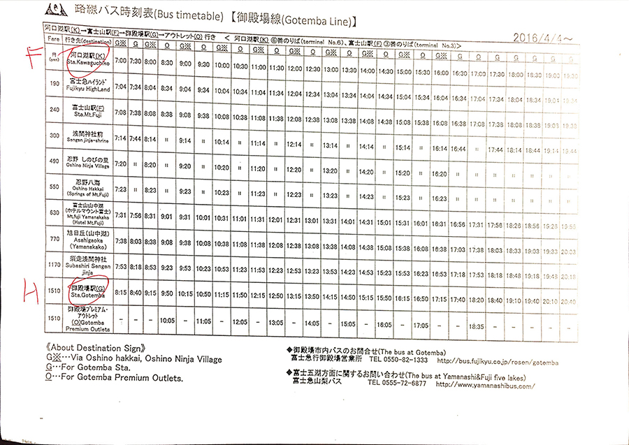
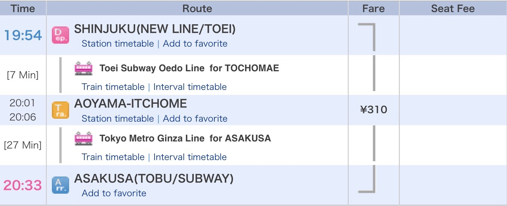
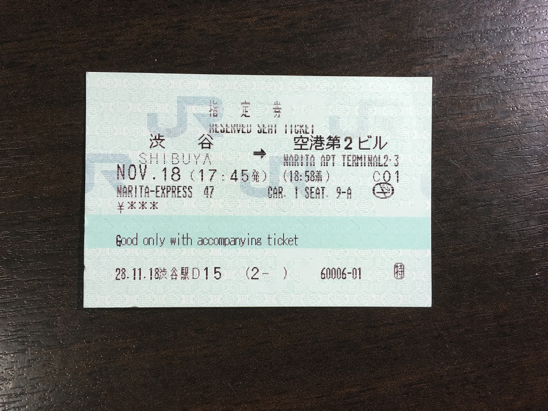

21 ความคิดเห็น
ความคิดเห็นที่ 2
Day 1 arrive at NRT – Shinjuku – Kawaguchiko
07.15 น. เครื่องบินได้ landing สู่สนามบินนาริตะ อากาศค่อนข้างเย็นเลยทีเดียวครับ เนื่องจากเครื่องลงค่อนข้างเช้า ทำให้สามารถผ่าน ตม. ได้อย่างไม่ต้องรอคิวเลยครับ ถ้าใครไม่อยากต่อคิว ตม. นาน แนะนำให้เลือกเที่ยวบินกลางคืนแล้วมาถึงเช้าครับ
หลังจากรับกระเป๋าและธุระส่วนตัวกันแล้ว พวกผมก็หาทางเข้าเมืองโตเกียว โดยวิธีที่ผมเลือกใช้คือ Narita Express เพราะว่าผมต้องการเดินทางไปที่สถานี Shinjuku เพื่อต่อรถไป Kawaguchiko ครับ
หลังจากที่ซื้อตั๋วเรียบร้อยแล้ว ผมก็เดินลงมาที่ชานชาลาซึ่งต้องลงบันไดเลื่อนลงมาอีกชั้นนึง มีป้ายบอกชัดเจนครับ ไม่ต้องกลัวหลงทาง จากนั้นก็มายืนรอตามเบอร์ตู้ที่เราต้องขึ้นครับ โดยจะเขียนไว้ชัดเจนบนพื้นครับ ขึ้นให้ถูกตู้นะครับ ถ้าผิดตู้ อาจไปไม่ถึงปลายทางที่เราต้องการไปก็เป็นได้
เวลา 08.53 น. รถมาถึงพอดีครับ ตรงเวลามากๆ พอขึ้นรถแล้ว ก็เอากระเป๋าเดินทางไปใส่ไว้ในช่องเก็บกระเป๋าที่บริเวณส่วนหน้าของตัวตู้รถนะครับ จากนั้นก็มานั่งที่นั่งตามที่เราได้เลือกกันไว้เลย
ภายในตัวรถกว้างขวางครับ เบาะนั่งสบาย มีที่ชาร์ตแบตโทรศัพท์ด้วย บรรยากาศภายในรถช่วงเช้ายังไม่ค่อยมีคนเท่าไหร่ครับ สบายๆ นั่งยาวๆ ประมาณ 1 ชม. ครึ่ง ก็ถึงปลายทางครับ
เวลา 10.21 น. ก็เดินทางมาถึงสถานี Shinjuku ครับ เป็นสถานีที่ใหญ่มาก จุดที่ผมจะไปต่อคือไปซื้อ Fuji Hakone Pass ที่ Odakyu Sightseeing Service Center ซึ่งวิธีการเดินทางผมก็ได้หาข้อมูลจากทั้ง Pantip แล้วก็เวปไซต์ของ Odakyu เอง ว่าต้องไปที่ West Exit เอาหล่ะ ผมก็เดินๆไปพร้อมกับกระเป๋าใบใหญ่ๆ ค่อนข้างไกลเลยครับ ย้ำว่าไปที่ West Exit เท่านั้นนะครับ พอมาถึงทางออกแล้ว ผมก็มองไปทางซ้ายมือ เค้ามีป้ายเขียนไว้ชัดเจนเลยว่า Odakyu Sightseeing Service Center ก็เดินตามไปนะครับ ขึ้นบันไดเลื่อนมา 1 ครั้ง พอขึ้นมาแล้วมันจะอยู่ทางซ้ายมือนะครับ
หลังจากที่ได้ Pass แล้ว เจ้าหน้าที่เค้าก็จะอธิบายการไปขึ้นรถบัสเพื่อไป Kawaguchiko ครับ เนื่องจากมีการเปลี่ยนแปลงสถานที่ขึ้นรถจากเดิมที่เคยอยู่ที่ West Exit ก็ได้เปลี่ยนไปอยู่ที่ New South Exit แล้ว ซึ่งมีวิธีเดินทางคือ ออกจาก West Exit ให้เลี้ยวซ้าย ตรงไปเรื่อยๆครับ จากนั้นเลี้ยวซ้ายที่หัวมุมห้าม Lumine 1 ก็จะเจอจุดขึ้นรถ ซึ่งต้องข้ามถนนไปฝั่งตรงข้ามครับ (สถานีอยู่บนชั้น 4 นะครับ)
อันนี้แผนที่ที่ได้มาพร้อมกับตอนซื้อ Fuji Hakone Pass ครับ ละเอียดมากเลยทีเดียว รับรองว่าไม่หลงครับ
แต่ก่อนที่จะไปขึ้นรถบัส ผมแวะซื้อ Tokyo Subway Ticket ก่อน ถามว่าทำไมไม่ซื้อที่สนามบินให้จบๆไปเลย คำตอบคือ ลืมครับ 55555 เพื่อนผมก็เลยหาข้อมูลมาว่า สามารถซื้อได้ที่ Bic Camera Shinjuku Nishiguchi Shop ในห้าง Odakyu ครับ (ออกทาง West Exit แล้วเลี้ยวขวา ก็จะเจอห้างครับ) โดยผมเลือกซื้อแบบ 72 hr สำหรับการเดินทางในโตเกียว ราคา 1500 เยน ตอนซื้อต้องแสดง Passport ของเราด้วยนะครับ
หลังจากซื้อแล้ว ก็เดินทางไปขึ้นรถบัสกันครับ
พอเดินทางมาถึง ก็มาเช็ครอบเดินรถ ผมจองไว้รอบ 12.15 น. เค้าก็จะบอกว่าให้ไปขึ้นที่ชานชาลาไหน ก็ไปนั่งรอที่นั่นครับ ถึงเวลา รถก็มาตรงเวลาครับ ผมก็ยกกระเป๋าเดินทางไปเก็บใต้ตัวรถ พกแค่ของที่จำเป็นไปบนรถครับ หลังจากที่รถออกเดินทางแล้ว ก็สามารถนั่งยาวๆไปจนถึงปลายทางได้เลย ใช้เวลาเดินทางประมาณ 1 ชม. 45 นาที หากว่าการจราจรไม่ติดขัดครับ
เวลา 14.00 น. รถก็เดินทางมาถึงสถานี Kawaguchiko ซึ่งถือว่าตรงเวลาครับ พอลงรถก็เห็นภูเขาฟูจิตั้งตระหง่านอยู่ตรงหน้าเลย พร้อมสภาพอากาศที่เป็นใจ เย็นสบาย ท้องฟ้าปลอดโปร่ง
บรรยากาศหน้าสถานี Kawaguchiko ครับ รถบัสวิ่งเข้าออกเกือบตลอดเวลา ส่วนใหญ่มาเป็นกรุ๊ปทัวร์ครับ
ผมก็ไม่รีรอครับ เดินทางไป Check-in ที่โรงแรมเลย ซึ่งคืนนี้ผมได้ฝากชีวิตไว้กับ Guesthouse Fujinokura Kawaguchiko Ekimaeten ซึ่งอยู่ตรงข้ามสถานี Kawaguchiko เลย ปกติแล้วทางที่พักเค้าให้ Check-in หลัง 15.00 น. แต่วันนั้นเจ้าหน้าที่ใจดี ให้ผม Check-in ก่อนเวลาได้ ทำให้ผมสามารถเอากระเป๋าเดินทางเข้าห้องแล้วออกไปเที่ยวต่อได้เลย
หลังจากเก็บกระเป๋าเรียบร้อยแล้ว ผมก็ออกมารอรถบัสที่สถานี Kawaguchiko ครับ โดยผมเลือกเดินทางไปที่ Kachi Kachi Ropeway เพื่อชมวิวภูเขาฟูจิครับ ผมจึงเลือกใช้รถบัสสายแดง (Red Line) ครับ ยืนรอนานพอสมควรเลย เนื่องจากนักท่องเที่ยวเยอะมาก การจราจรก็ติดขัดครับ กว่าเดินทางมาถึงก็เกือบ 4 โมงเย็นแล้ว เอ้อ ลืมบอกไป Kachi Kachi Ropeway อยู่ที่ป้าย 11 นะครับ ตอนจะลง เราก็กดกริ่งที่อยู่ใกล้ตัวเรา รถก็จะหยุดครับ พอเดินผ่านหน้าคนขับรถ ก็ยื่น Pass ที่เราซื้อมาให้คนขับรถดูครับ
แผนที่แสดงเส้นทาง Retro bus ที่วิ่งรอบๆ ทะเลสาปต่างๆครับ
ตรวจสอบตารางการเดินรถได้ที่ : http://bus-en.fujikyu.co.jp/heritage-tour/detail/id/1/
***ระยะเวลาขึ้นกับสภาพการจราจรด้วยนะครับ วันที่ผมไป รถติดมาก กว่าจะไปถึงป้ายเบอร์ 11 ใช้เวลาเกือบชั่วโมงครับ
พอลงจากรถบัสแล้ว ให้สังเกตร้าน Fujiyama cookie ทางไปขึ้น Ropeway อยู่ถัดจากร้านนั้นครับ ตอนผมไปถึงคิวไม่ค่อยยาวครับ ขยับได้เรื่อยๆ รอไม่นานก็ไม่ขึ้นครับ ค่าขึ้น Round Trip ปกติ 800 เยน แต่ผมใช้ Pass ลดราคาได้เหลือ 640 เยนครับ

ขึ้นไปถึงยอดแล้ว ก็จะได้เห็นภูเขาฟูจิแบบเต็มๆ ลูกครับ วันนั้นท้องฟ้ามีเมฆนิดหน่อย กำลังสวยเลยครับ พระอาทิตย์ก็กำลังจะตก ทำให้ยิ่งสวยไปใหญ่เลยครับ วินาทีนั้นคือตลึงกับความยิ่งใหญ่ของภูเขาลูกนี้ไปเลยครับ สวยสมราคาคุยมากๆ
มีขนมดังโงะอุ่นๆ ขายด้วย ราคาไม้ละ 300 เยน ซื้อมากินตัดกันความเย็นของอากาศรอบๆตัวครับ
ผมอยู่จนมันปิดเลยแหล่ะ หรือประมาณ 5 โมงเย็น ตอนนั้นมืดแล้วครับ ตอนลงก็ภูเขาก็ได้เห็นเมือง Kawaguchiko ยามค่ำคืน สวยงามมากครับ แต่ผมไม่ได้ถ่ายมา เพราะตอนนั้นคนเยอะมาก
หลังจากที่ลงมาถึงด้านล่างก็เกือบ 6 โมงแล้ว เนื่องจากกระเช้ากับที่พักอยู่ไม่ไกลกันมาก ผมกับเพื่อนๆ เลยตัดสินใจ เดินกลับที่พักครับ รับชมบรรยากาศยามค่ำคืนที่นั่น ช่วงค่ำคือเงียบสงบมากครับ ร้านค้าปิดเกือบหมดแล้ว รถแทบไม่มีครับ ไม่นานก็กลับมาถึงที่พัก แต่จะยังไม่เข้าที่พักครับ เดินต่ออีกนิด ไปกินอาหารเย็นที่ร้าน Hoto Fudo ตรงข้ามสถานี ร้านนี้ขาย Hoto ซึ่งเป็นอาหารพื้นเมืองของที่นี่ เป็นคล้ายๆราเมน เส้นใหญ่ๆ ใส่พักเยอะมาก ในน้ำซุปมิโสะครับ ราคา 1080 เยน ผมกับเพื่อนๆ สั่งเมนูเดียวกันมาคนละ 1 ถ้วยครับ พบว่า “มันใหญ่มากกกกก” ครับ กินกันไม่หมด กินแล้วรู้สึกสุขภาพดีเลยครับ เพราะไม่มีเนื้อสัตว์เลย มีแค่ผักกับเส้นกับน้ำซุป
หลังจากกินเสร็จแล้วก็ออกสำรวจร้านสะดวกซื้อแถวๆนั้นครับ เพราะต้องเตรียมไว้สำหรับอาหารเช้าวันพรุ่งนี้ เนื่องจากต้องออกเที่ยวแต่เช้า พบว่ามี 7-11 กับ Lawson อยู่ใกล้ๆครับ อุ่นใจหล่ะครับ มีที่กินตอนเช้าแล้ว ก็เดินทางกลับที่พักครับ ถือว่าเป็นการสิ้นสุดการท่องเที่ยวในวันแรกครับ
07.15 น. เครื่องบินได้ landing สู่สนามบินนาริตะ อากาศค่อนข้างเย็นเลยทีเดียวครับ เนื่องจากเครื่องลงค่อนข้างเช้า ทำให้สามารถผ่าน ตม. ได้อย่างไม่ต้องรอคิวเลยครับ ถ้าใครไม่อยากต่อคิว ตม. นาน แนะนำให้เลือกเที่ยวบินกลางคืนแล้วมาถึงเช้าครับ
หลังจากรับกระเป๋าและธุระส่วนตัวกันแล้ว พวกผมก็หาทางเข้าเมืองโตเกียว โดยวิธีที่ผมเลือกใช้คือ Narita Express เพราะว่าผมต้องการเดินทางไปที่สถานี Shinjuku เพื่อต่อรถไป Kawaguchiko ครับ
หลังจากที่ซื้อตั๋วเรียบร้อยแล้ว ผมก็เดินลงมาที่ชานชาลาซึ่งต้องลงบันไดเลื่อนลงมาอีกชั้นนึง มีป้ายบอกชัดเจนครับ ไม่ต้องกลัวหลงทาง จากนั้นก็มายืนรอตามเบอร์ตู้ที่เราต้องขึ้นครับ โดยจะเขียนไว้ชัดเจนบนพื้นครับ ขึ้นให้ถูกตู้นะครับ ถ้าผิดตู้ อาจไปไม่ถึงปลายทางที่เราต้องการไปก็เป็นได้
เวลา 08.53 น. รถมาถึงพอดีครับ ตรงเวลามากๆ พอขึ้นรถแล้ว ก็เอากระเป๋าเดินทางไปใส่ไว้ในช่องเก็บกระเป๋าที่บริเวณส่วนหน้าของตัวตู้รถนะครับ จากนั้นก็มานั่งที่นั่งตามที่เราได้เลือกกันไว้เลย
ภายในตัวรถกว้างขวางครับ เบาะนั่งสบาย มีที่ชาร์ตแบตโทรศัพท์ด้วย บรรยากาศภายในรถช่วงเช้ายังไม่ค่อยมีคนเท่าไหร่ครับ สบายๆ นั่งยาวๆ ประมาณ 1 ชม. ครึ่ง ก็ถึงปลายทางครับ
เวลา 10.21 น. ก็เดินทางมาถึงสถานี Shinjuku ครับ เป็นสถานีที่ใหญ่มาก จุดที่ผมจะไปต่อคือไปซื้อ Fuji Hakone Pass ที่ Odakyu Sightseeing Service Center ซึ่งวิธีการเดินทางผมก็ได้หาข้อมูลจากทั้ง Pantip แล้วก็เวปไซต์ของ Odakyu เอง ว่าต้องไปที่ West Exit เอาหล่ะ ผมก็เดินๆไปพร้อมกับกระเป๋าใบใหญ่ๆ ค่อนข้างไกลเลยครับ ย้ำว่าไปที่ West Exit เท่านั้นนะครับ พอมาถึงทางออกแล้ว ผมก็มองไปทางซ้ายมือ เค้ามีป้ายเขียนไว้ชัดเจนเลยว่า Odakyu Sightseeing Service Center ก็เดินตามไปนะครับ ขึ้นบันไดเลื่อนมา 1 ครั้ง พอขึ้นมาแล้วมันจะอยู่ทางซ้ายมือนะครับ
หลังจากที่ได้ Pass แล้ว เจ้าหน้าที่เค้าก็จะอธิบายการไปขึ้นรถบัสเพื่อไป Kawaguchiko ครับ เนื่องจากมีการเปลี่ยนแปลงสถานที่ขึ้นรถจากเดิมที่เคยอยู่ที่ West Exit ก็ได้เปลี่ยนไปอยู่ที่ New South Exit แล้ว ซึ่งมีวิธีเดินทางคือ ออกจาก West Exit ให้เลี้ยวซ้าย ตรงไปเรื่อยๆครับ จากนั้นเลี้ยวซ้ายที่หัวมุมห้าม Lumine 1 ก็จะเจอจุดขึ้นรถ ซึ่งต้องข้ามถนนไปฝั่งตรงข้ามครับ (สถานีอยู่บนชั้น 4 นะครับ)
อันนี้แผนที่ที่ได้มาพร้อมกับตอนซื้อ Fuji Hakone Pass ครับ ละเอียดมากเลยทีเดียว รับรองว่าไม่หลงครับ
แต่ก่อนที่จะไปขึ้นรถบัส ผมแวะซื้อ Tokyo Subway Ticket ก่อน ถามว่าทำไมไม่ซื้อที่สนามบินให้จบๆไปเลย คำตอบคือ ลืมครับ 55555 เพื่อนผมก็เลยหาข้อมูลมาว่า สามารถซื้อได้ที่ Bic Camera Shinjuku Nishiguchi Shop ในห้าง Odakyu ครับ (ออกทาง West Exit แล้วเลี้ยวขวา ก็จะเจอห้างครับ) โดยผมเลือกซื้อแบบ 72 hr สำหรับการเดินทางในโตเกียว ราคา 1500 เยน ตอนซื้อต้องแสดง Passport ของเราด้วยนะครับ
หลังจากซื้อแล้ว ก็เดินทางไปขึ้นรถบัสกันครับ
พอเดินทางมาถึง ก็มาเช็ครอบเดินรถ ผมจองไว้รอบ 12.15 น. เค้าก็จะบอกว่าให้ไปขึ้นที่ชานชาลาไหน ก็ไปนั่งรอที่นั่นครับ ถึงเวลา รถก็มาตรงเวลาครับ ผมก็ยกกระเป๋าเดินทางไปเก็บใต้ตัวรถ พกแค่ของที่จำเป็นไปบนรถครับ หลังจากที่รถออกเดินทางแล้ว ก็สามารถนั่งยาวๆไปจนถึงปลายทางได้เลย ใช้เวลาเดินทางประมาณ 1 ชม. 45 นาที หากว่าการจราจรไม่ติดขัดครับ
เวลา 14.00 น. รถก็เดินทางมาถึงสถานี Kawaguchiko ซึ่งถือว่าตรงเวลาครับ พอลงรถก็เห็นภูเขาฟูจิตั้งตระหง่านอยู่ตรงหน้าเลย พร้อมสภาพอากาศที่เป็นใจ เย็นสบาย ท้องฟ้าปลอดโปร่ง
บรรยากาศหน้าสถานี Kawaguchiko ครับ รถบัสวิ่งเข้าออกเกือบตลอดเวลา ส่วนใหญ่มาเป็นกรุ๊ปทัวร์ครับ
ผมก็ไม่รีรอครับ เดินทางไป Check-in ที่โรงแรมเลย ซึ่งคืนนี้ผมได้ฝากชีวิตไว้กับ Guesthouse Fujinokura Kawaguchiko Ekimaeten ซึ่งอยู่ตรงข้ามสถานี Kawaguchiko เลย ปกติแล้วทางที่พักเค้าให้ Check-in หลัง 15.00 น. แต่วันนั้นเจ้าหน้าที่ใจดี ให้ผม Check-in ก่อนเวลาได้ ทำให้ผมสามารถเอากระเป๋าเดินทางเข้าห้องแล้วออกไปเที่ยวต่อได้เลย
หลังจากเก็บกระเป๋าเรียบร้อยแล้ว ผมก็ออกมารอรถบัสที่สถานี Kawaguchiko ครับ โดยผมเลือกเดินทางไปที่ Kachi Kachi Ropeway เพื่อชมวิวภูเขาฟูจิครับ ผมจึงเลือกใช้รถบัสสายแดง (Red Line) ครับ ยืนรอนานพอสมควรเลย เนื่องจากนักท่องเที่ยวเยอะมาก การจราจรก็ติดขัดครับ กว่าเดินทางมาถึงก็เกือบ 4 โมงเย็นแล้ว เอ้อ ลืมบอกไป Kachi Kachi Ropeway อยู่ที่ป้าย 11 นะครับ ตอนจะลง เราก็กดกริ่งที่อยู่ใกล้ตัวเรา รถก็จะหยุดครับ พอเดินผ่านหน้าคนขับรถ ก็ยื่น Pass ที่เราซื้อมาให้คนขับรถดูครับ
แผนที่แสดงเส้นทาง Retro bus ที่วิ่งรอบๆ ทะเลสาปต่างๆครับ
ตรวจสอบตารางการเดินรถได้ที่ : http://bus-en.fujikyu.co.jp/heritage-tour/detail/id/1/
***ระยะเวลาขึ้นกับสภาพการจราจรด้วยนะครับ วันที่ผมไป รถติดมาก กว่าจะไปถึงป้ายเบอร์ 11 ใช้เวลาเกือบชั่วโมงครับ
พอลงจากรถบัสแล้ว ให้สังเกตร้าน Fujiyama cookie ทางไปขึ้น Ropeway อยู่ถัดจากร้านนั้นครับ ตอนผมไปถึงคิวไม่ค่อยยาวครับ ขยับได้เรื่อยๆ รอไม่นานก็ไม่ขึ้นครับ ค่าขึ้น Round Trip ปกติ 800 เยน แต่ผมใช้ Pass ลดราคาได้เหลือ 640 เยนครับ
ขึ้นไปถึงยอดแล้ว ก็จะได้เห็นภูเขาฟูจิแบบเต็มๆ ลูกครับ วันนั้นท้องฟ้ามีเมฆนิดหน่อย กำลังสวยเลยครับ พระอาทิตย์ก็กำลังจะตก ทำให้ยิ่งสวยไปใหญ่เลยครับ วินาทีนั้นคือตลึงกับความยิ่งใหญ่ของภูเขาลูกนี้ไปเลยครับ สวยสมราคาคุยมากๆ
มีขนมดังโงะอุ่นๆ ขายด้วย ราคาไม้ละ 300 เยน ซื้อมากินตัดกันความเย็นของอากาศรอบๆตัวครับ
ผมอยู่จนมันปิดเลยแหล่ะ หรือประมาณ 5 โมงเย็น ตอนนั้นมืดแล้วครับ ตอนลงก็ภูเขาก็ได้เห็นเมือง Kawaguchiko ยามค่ำคืน สวยงามมากครับ แต่ผมไม่ได้ถ่ายมา เพราะตอนนั้นคนเยอะมาก
หลังจากที่ลงมาถึงด้านล่างก็เกือบ 6 โมงแล้ว เนื่องจากกระเช้ากับที่พักอยู่ไม่ไกลกันมาก ผมกับเพื่อนๆ เลยตัดสินใจ เดินกลับที่พักครับ รับชมบรรยากาศยามค่ำคืนที่นั่น ช่วงค่ำคือเงียบสงบมากครับ ร้านค้าปิดเกือบหมดแล้ว รถแทบไม่มีครับ ไม่นานก็กลับมาถึงที่พัก แต่จะยังไม่เข้าที่พักครับ เดินต่ออีกนิด ไปกินอาหารเย็นที่ร้าน Hoto Fudo ตรงข้ามสถานี ร้านนี้ขาย Hoto ซึ่งเป็นอาหารพื้นเมืองของที่นี่ เป็นคล้ายๆราเมน เส้นใหญ่ๆ ใส่พักเยอะมาก ในน้ำซุปมิโสะครับ ราคา 1080 เยน ผมกับเพื่อนๆ สั่งเมนูเดียวกันมาคนละ 1 ถ้วยครับ พบว่า “มันใหญ่มากกกกก” ครับ กินกันไม่หมด กินแล้วรู้สึกสุขภาพดีเลยครับ เพราะไม่มีเนื้อสัตว์เลย มีแค่ผักกับเส้นกับน้ำซุป
หลังจากกินเสร็จแล้วก็ออกสำรวจร้านสะดวกซื้อแถวๆนั้นครับ เพราะต้องเตรียมไว้สำหรับอาหารเช้าวันพรุ่งนี้ เนื่องจากต้องออกเที่ยวแต่เช้า พบว่ามี 7-11 กับ Lawson อยู่ใกล้ๆครับ อุ่นใจหล่ะครับ มีที่กินตอนเช้าแล้ว ก็เดินทางกลับที่พักครับ ถือว่าเป็นการสิ้นสุดการท่องเที่ยวในวันแรกครับ
ความคิดเห็นที่ 2-1
ใช่เลยค่ะ วันนั้นมีงานเทศกาล รถติดมากกกก
เราไปแค่ป้ายหมายเลข5 ยังเกือบชั่วโมง พอถึง guesthouse เลยตัดสินใจเช่าจักรยานปั่นเลยค่ะ 555 โหดมันฮา หนาวมากด้วย
เราไปแค่ป้ายหมายเลข5 ยังเกือบชั่วโมง พอถึง guesthouse เลยตัดสินใจเช่าจักรยานปั่นเลยค่ะ 555 โหดมันฮา หนาวมากด้วย
ความคิดเห็นที่ 3
ความคิดเห็นที่ 3-1
ตอบคำถามนะครับ : ได้ครับ แล้วแต่เราว่าจะเลือกเข้าทางไหนก่อน
ความคิดเห็นที่ 4
Day 2 Kawaguchiko – Gotemba - Hakone
เช้านี้ผมมีโปรแกรมไป Chureito Pagoda เลยออกเที่ยวแต่เช้า เพราะอากาศตอนเช้า เมฆยังไม่บังภูเขาฟูจิ เลยตัดสินใจไปแต่เช้าเลย check out แล้วฝากกระเป๋าไว้ที่โรงแรมก่อน เรื่องอาหารเช้า เนื่องจากยังเช้ามากๆ ร้านอาหารยังไม่เปิดกัน เลยฝากท้องไว้กับ Lawson ใกล้ๆที่พักครับ
บรรยากาศหน้าสถานีช่วงเช้าครับ เงียบสงบมากคนละแบบกับตอนที่มาถึงเลยครับ อากาศก็เย็นถึงหนาวครับ ประมาณ 8 องศา เบาๆ
กิน Star buck ที่ไทยจนเบื่อแล้ว วันนี้ขอมากินที่ญี่ปุ่นบ้างละกัน ><
ประมาณ 8 โมง ผมก็มาขึ้นรถไฟที่สถานี Kawaguchiko เพื่อเดินทางไปยัง Chireito Pagoda ซึ่งต้องลงที่สถานี Shimoyoshida ใช้เวลาเดินทางประมาณ 10 นาที โดยใช้ Fuji Hakone Pass ยื่นให้พนักงานดูก่อนเข้า-ออกจากสถานีครับ
อันนี้เป็นหน้าตารถไฟที่ผมจะใช้เดินทางไปที่สถานี Shimoyoshida ครับ
ตอนนี้ผมได้เดินทางมาถึงสถานี Shimoyoshida แล้ว เจอป้ายสถานีก็แอบสตั๊นไปนิดนึงครับ มีภาษาไทยด้วย แต่ไม่แปลกใจเลยครับ เพราะมาเที่ยวที่ญี่ปุ่น 6 วัน เจอคนไทยทุกวันครับ รวมถึงกลุ่มที่นั่งรถไฟมาลงที่สถานีนี้ด้วยเป็นคนไทยทั้งหมดเลยครับ 5555555
Chureito Pagoda ไม่ได้อยู่ติดสถานีครับ จำเป็นต้องเดินผ่านเมืองไปซักพักก็จะถึงทางขึ้นครับ
บรรยากาศภายเมืองที่เดินผ่านครับ เงียบสงบ เป็นระเบียบและน่าอยู่มากครับ
ตอนนี้ก็มาถึงทางขึ้นแล้ว เป็นบันได ถ้าจำไม่ผิดประมาณ 400 ขั้นครับ ใช้เวลาอีกซักพักกว่าจะถึงยอดเขา เพราะระหว่างเดินก็เพลิดเพลินไปกับใบไม้เปลี่ยนสีข้างๆทาง 5555555
บรรยากาศที่บริเวณทางเข้าครับ ต่างคนต่างหยิบกล้องมาถ่ายแทบไม่ทัน ติดอยู่ที่ทางเข้าไปหลายนาทีเลยครับ 555555
ภูเขาฟูจิตัดกับใบไม้สีแดง ที่ยังไม่ถึงยอดนะเนี่ย โรแมนติกมาก ไม่มีคำจะบรรยายครับ ให้ภาพได้บรรยายไป
มาถึงยอดแล้วก็ต้องถ่ายรูปมุมมหาชนซะหน่อย เสียดายที่ฟ้าวันนี้ไม่สวยเท่าไหร่ แต่ก็ดีใจที่มาแล้วยังเห็นภูเขาฟูจิครับ พวกผมใช้เวลาอยู่นี่อีกซักพัก ให้หายเหนื่อยกัน ก่อนที่จะเดินลงไปข้างล่างครับ
ขณะเดินลงก็ยังคงถ่ายรูปครับ สวยสะดุดตามากจริงๆ ปริ่มมากที่ได้มาถึงที่นี่
ขากลับก็มาขึ้นรถที่สถานี Shimoyoshida เช่นเคย เพื่อกลับไปที่สถานี Kawaguchiko ครับ
ตอนนี้กลับมาถึงสถานี Kawaguchiko แล้ว เป้าหมายต่อไปคือไปชมพูเขาฟูจิริมทะเลสาบ Kawaguchiko ผมเลือกนั่งไปที่ Oishi park ซึ่งอยู่ปลายทางของ Retro bus สายแดง (หมายเลข 22 ในแผนที่) ใช้เวลาเดินทางประมาณ 30 นาทีครับ
ตอนนี้ก็มาถึง Oishi park แล้วครับ แวะถ่ายรูปภูเขาฟูจิริมทะเลสาบซะหน่อย สวย สง่า อลังการไม่แพ้มุมอื่นๆเลยครับ
ถ้ามาที่นี่ประมาณเดือนตุลาคม ต้นไม้พวกนี้จะเป็นสีแดงครับ แต่มาตอนนี้ก็จะได้แบบสีน้ำตาล สวยไปอีกแบบครับ จริงๆคือมันเหี่ยวนั่นแหล่ะครับ ปลอบใจตัวเองไปงั้น 5555555
เจอทะเลสาบแล้วครับ ถ่ายกันรัวๆ เสียดายที่ฟ้าแอบเน่า เลยไม่ได้ภาพปังๆเลย แต่อย่างน้อยได้เห็นฟูจิเต็มลูกครับ เพราะปกติแล้วนางจะขี้อาย ไม่ค่อยปรากฏกายให้นักท่องเที่ยวได้ยลโฉมนางเท่าไหร่ คิดว่าโชคดีมากครับที่ได้มาเห็นด้วยตาตัวเอง ดูในรูปก็ไม่เหมือนของจริงครับ ของจริงมันยิ่งใหญ่กว่าในภาพมาก
ก่อนกลับก็แวะกินไอศกรีมกันก่อน ของผมเป็นรสบลูเบอรี่ อร่อยดีครับ ไม่หวานมาก เข้ากับอากาศเย็นๆด้านนอกพอดีเลย อิอิ
ต่อไปผมมีแผนจะไปชม Maple corridor อันเลืองชื่อของที่นี่ ซึ่งต้องนั่ง Retro bus สายแดงมาลงที่ป้ายหมายเลข 19 ครับ
มาถึงแล้วป้ายหมายเลข 19 ช่วงนี้มีเทศกาล Fujikawaguchiko Autumn Leaves Festival ซึ่งจัดขึ้นเป็นประจำทุกปี ปีนี่จัดขึ้นระหว่างวันที่ 1 – 23 พฤศจิกายนครับ ถายในงานก็ขายสินค้าเล็กๆ น่ารักๆ อาหาร เหมือนเปิดท้าย ตลาดนัดบ้านเราครับ
เดินเข้ามาอีกนิดก็เจออุโมงค์ต้น maple ซึ่ง....ยังไม่เปลี่ยนสีเท่าที่ควรครับ ส่วนใหญ่ก็ยังเป็นสีเขียวอยู่ แอบผิดหวังนิดๆ พวกผมก็เลยอยู่ที่นี่ไม่นานครับ ถ้าอยากเห็นแดงทั้งอุโมงค์ แนะนำให้มาประมาณปลายเดือนพฤศจิกายนครับ
เดินทะลุมาอีกฝั่งนึง อ้าว แดงรัวๆ ทั้งๆที่อยู่ห่างกันไม่กี่เมตรแท้ งงในงงเลยครับ
ในอุโมงค์ยังไม่แดงเท่าไหร่ เอาเหลืองไปดูก่อนละกันครับ 55555
เที่ยงแล้ว ก็หาอาหารเที่ยงกินแถวๆนี้เลย ชื่อร้านเป็นภาษาญี่ปุ่น อ่านไม่ออกครับ 55555 ฝากพิกัดร้านไว้ละกัน
คนเต็มเกือบทุกโต๊ะเลย เมนูที่ผมเลือกมื้อนี้คือโซบะเย็น เสิร์ฟพร้อมกุ้งเทมปุระครับ รสชาติก็พอใช้ได้ครับ ราคาประมาณ 1000 เยนครับ
ทานอาหารเที่ยงเสร็จ พวกผมก็นั่งรถ Retro bus กลับสถานี Kawaguchiko เพื่อไปเอากระเป๋าที่ฝากไว้กับโรงแรม เพราะหลังจากนี้ พวกผมจะเดินทางไปที่ Hakone แล้ว
ก่อนไปจากเมืองนี้ ขอถ่ายรูปกับฝาท่อระบายน้ำที่เป็นเอกลักษณ์ของเมืองนี้ก่อนละกัน
การเดินทางไปยัง Hakone ของผมจะใช้บริการของ Fujikyu bus ออกเดินทางไปที่ Gotemba แล้วเปลี่ยนไปขึ้น Odakyu Hakone Highway bus เพื่อเดินทางไปยังโรงแรมครับ
ตามที่พนักงานที่ Odakyu บอก จะขึ้น Fujikyu bus ต้องมารอที่ชานชาลาหมายเลข 6 ในสถานี kawaguchiko ครับ ใช้เวลาประมาณ 1 ชั่วโมง 15 นาที ก็จะมาถึงสถานี Gotemba ครับ
อันนี้เป็นตารางเวลาการเดินรถของ Fujikyu bus จากสถานี Kawaguchiko ไปยังสถานี Gotemba ครับ
ตามพยากรณ์อากาศว่าจะมีฝนตกในช่วงบ่ายในพื้นที่ Kawaguchiko ไปจนถึง Hakone ซึ่งก็เป็นไปตามพยากรณ์ครับ ฝนเริ่มเทลงมาครับ โชคดีที่โปรแกรมช่วงบ่ายจะอยู่ในที่ร่มซะเป็นส่วนใหญ่ เลยไม่ได้รับผลกระทบมากครับ
นั่งรถมาซักพักใหญ่ๆ รถก็มาเทียบชานชาลาที่ 3 ของสถานี Gotemba เป็นที่เรียบร้อย มีฝนตกปรอยๆครับ และนี่เป็นสาเหตุที่ทำให้ผมไม่สามารถถ่ายภาพบรรยากาศหลังจากนี้มาให้สมาชิกทุกคนดูได้ ผมจะพยายามอธิบายให้เห็นภาพเท่าที่ทำได้นะครับ
สถานที่พวกผมจะไปต่อคือ Gotemba Premium outlet ซึ่งเป็น outlet ที่มีขนาดใหญ่ที่สุดในญี่ปุ่นครับ โดยก่อนจะไป ผมได้ฝากกระเป๋าไว้กับตู้ฝากในสถานีครับ แล้วก็ไปรอขึ้นรถที่อีกฝั่งของสถานี (ในสถานีจะมีลูกศรบอกชัดเจนครับว่า For Kawaguchiko หรือ For Hakone)
การเดินทางไปที่ outlet มีรถบัสบริการฟรีๆ โดยรถจะออกทุก 15 นาทีครับ
ตอนนี้ก็มาถึงที่ Gotemba premium outlet แล้ว ไม่รอช้าครับ เดินช้อปกันอย่างสนุกสนาน มีสินค้าหลายแบรนด์ให้เลือกในราคาไม่แพงครับ แต่ต้องบอกไว้ก่อนว่าอาจจะไม่ใช้ของรุ่นใหม่ที่พึ่งออกมาไม่นานนะครับ
ผมอยู่ที่นี่จนค่ำ เลยกินอาหารเย็นที่ Food Bazar ของที่นี่ครับ มื้อนี้เป็นข้าวราดแกงกะหรี่หมูทอด รสชาติดีครับ แกงกะหรี่เข้มข้น กับหมูทอดชิ้นโตพอดีคำ ผมกินเกลี้ยงเลย (อาจจะเป็นเพราะหิวด้วย 555555)
หลังจากกินข้าวเสร็จ ก็นั่งรถบัสฟรีกลับมาที่สถานี Gotemba เพื่อรอรถเข้า Hakone ครับ
ผมนั่ง Odakyu Hakone Highway bus (W line) เพราะผ่านทางเข้าโรงแรมที่จะพักคืนนี้พอดี ซึ่งก็คือโรงแรม Hakone Sengokuhara Prince Hotel ครับ
อันนี้เป็นแผนที่แสดงการเดินรถบัสในพื้นที่ Hakone ซึ่งผมต้องใช้บริการพวกมันในการเที่ยว Hakone ในวันพรุ่งนี้ครับ
นั่งรถมาอีกซักพักก็มาถึงทางเข้าโรงแรมครับ เนื่องจากโรงแรมไม่ได้อยู่ติดถนนใหญ่ ต้องเดินเข้าไปอีกประมาณ 600 เมตร จึงจะถึงโรงแรม ก็เป็นอันจบการเดินทางในวันที่ 2 ครับ
ขอแทรกพิกัดโรงแรมที่เข้าพักในคืนนี้ครับ
เช้านี้ผมมีโปรแกรมไป Chureito Pagoda เลยออกเที่ยวแต่เช้า เพราะอากาศตอนเช้า เมฆยังไม่บังภูเขาฟูจิ เลยตัดสินใจไปแต่เช้าเลย check out แล้วฝากกระเป๋าไว้ที่โรงแรมก่อน เรื่องอาหารเช้า เนื่องจากยังเช้ามากๆ ร้านอาหารยังไม่เปิดกัน เลยฝากท้องไว้กับ Lawson ใกล้ๆที่พักครับ
บรรยากาศหน้าสถานีช่วงเช้าครับ เงียบสงบมากคนละแบบกับตอนที่มาถึงเลยครับ อากาศก็เย็นถึงหนาวครับ ประมาณ 8 องศา เบาๆ
กิน Star buck ที่ไทยจนเบื่อแล้ว วันนี้ขอมากินที่ญี่ปุ่นบ้างละกัน ><
ประมาณ 8 โมง ผมก็มาขึ้นรถไฟที่สถานี Kawaguchiko เพื่อเดินทางไปยัง Chireito Pagoda ซึ่งต้องลงที่สถานี Shimoyoshida ใช้เวลาเดินทางประมาณ 10 นาที โดยใช้ Fuji Hakone Pass ยื่นให้พนักงานดูก่อนเข้า-ออกจากสถานีครับ
อันนี้เป็นหน้าตารถไฟที่ผมจะใช้เดินทางไปที่สถานี Shimoyoshida ครับ
ตอนนี้ผมได้เดินทางมาถึงสถานี Shimoyoshida แล้ว เจอป้ายสถานีก็แอบสตั๊นไปนิดนึงครับ มีภาษาไทยด้วย แต่ไม่แปลกใจเลยครับ เพราะมาเที่ยวที่ญี่ปุ่น 6 วัน เจอคนไทยทุกวันครับ รวมถึงกลุ่มที่นั่งรถไฟมาลงที่สถานีนี้ด้วยเป็นคนไทยทั้งหมดเลยครับ 5555555
Chureito Pagoda ไม่ได้อยู่ติดสถานีครับ จำเป็นต้องเดินผ่านเมืองไปซักพักก็จะถึงทางขึ้นครับ
บรรยากาศภายเมืองที่เดินผ่านครับ เงียบสงบ เป็นระเบียบและน่าอยู่มากครับ
ตอนนี้ก็มาถึงทางขึ้นแล้ว เป็นบันได ถ้าจำไม่ผิดประมาณ 400 ขั้นครับ ใช้เวลาอีกซักพักกว่าจะถึงยอดเขา เพราะระหว่างเดินก็เพลิดเพลินไปกับใบไม้เปลี่ยนสีข้างๆทาง 5555555
บรรยากาศที่บริเวณทางเข้าครับ ต่างคนต่างหยิบกล้องมาถ่ายแทบไม่ทัน ติดอยู่ที่ทางเข้าไปหลายนาทีเลยครับ 555555
ภูเขาฟูจิตัดกับใบไม้สีแดง ที่ยังไม่ถึงยอดนะเนี่ย โรแมนติกมาก ไม่มีคำจะบรรยายครับ ให้ภาพได้บรรยายไป
มาถึงยอดแล้วก็ต้องถ่ายรูปมุมมหาชนซะหน่อย เสียดายที่ฟ้าวันนี้ไม่สวยเท่าไหร่ แต่ก็ดีใจที่มาแล้วยังเห็นภูเขาฟูจิครับ พวกผมใช้เวลาอยู่นี่อีกซักพัก ให้หายเหนื่อยกัน ก่อนที่จะเดินลงไปข้างล่างครับ
ขณะเดินลงก็ยังคงถ่ายรูปครับ สวยสะดุดตามากจริงๆ ปริ่มมากที่ได้มาถึงที่นี่
ขากลับก็มาขึ้นรถที่สถานี Shimoyoshida เช่นเคย เพื่อกลับไปที่สถานี Kawaguchiko ครับ
ตอนนี้กลับมาถึงสถานี Kawaguchiko แล้ว เป้าหมายต่อไปคือไปชมพูเขาฟูจิริมทะเลสาบ Kawaguchiko ผมเลือกนั่งไปที่ Oishi park ซึ่งอยู่ปลายทางของ Retro bus สายแดง (หมายเลข 22 ในแผนที่) ใช้เวลาเดินทางประมาณ 30 นาทีครับ
ตอนนี้ก็มาถึง Oishi park แล้วครับ แวะถ่ายรูปภูเขาฟูจิริมทะเลสาบซะหน่อย สวย สง่า อลังการไม่แพ้มุมอื่นๆเลยครับ
ถ้ามาที่นี่ประมาณเดือนตุลาคม ต้นไม้พวกนี้จะเป็นสีแดงครับ แต่มาตอนนี้ก็จะได้แบบสีน้ำตาล สวยไปอีกแบบครับ จริงๆคือมันเหี่ยวนั่นแหล่ะครับ ปลอบใจตัวเองไปงั้น 5555555
เจอทะเลสาบแล้วครับ ถ่ายกันรัวๆ เสียดายที่ฟ้าแอบเน่า เลยไม่ได้ภาพปังๆเลย แต่อย่างน้อยได้เห็นฟูจิเต็มลูกครับ เพราะปกติแล้วนางจะขี้อาย ไม่ค่อยปรากฏกายให้นักท่องเที่ยวได้ยลโฉมนางเท่าไหร่ คิดว่าโชคดีมากครับที่ได้มาเห็นด้วยตาตัวเอง ดูในรูปก็ไม่เหมือนของจริงครับ ของจริงมันยิ่งใหญ่กว่าในภาพมาก
ก่อนกลับก็แวะกินไอศกรีมกันก่อน ของผมเป็นรสบลูเบอรี่ อร่อยดีครับ ไม่หวานมาก เข้ากับอากาศเย็นๆด้านนอกพอดีเลย อิอิ
ต่อไปผมมีแผนจะไปชม Maple corridor อันเลืองชื่อของที่นี่ ซึ่งต้องนั่ง Retro bus สายแดงมาลงที่ป้ายหมายเลข 19 ครับ
มาถึงแล้วป้ายหมายเลข 19 ช่วงนี้มีเทศกาล Fujikawaguchiko Autumn Leaves Festival ซึ่งจัดขึ้นเป็นประจำทุกปี ปีนี่จัดขึ้นระหว่างวันที่ 1 – 23 พฤศจิกายนครับ ถายในงานก็ขายสินค้าเล็กๆ น่ารักๆ อาหาร เหมือนเปิดท้าย ตลาดนัดบ้านเราครับ
เดินเข้ามาอีกนิดก็เจออุโมงค์ต้น maple ซึ่ง....ยังไม่เปลี่ยนสีเท่าที่ควรครับ ส่วนใหญ่ก็ยังเป็นสีเขียวอยู่ แอบผิดหวังนิดๆ พวกผมก็เลยอยู่ที่นี่ไม่นานครับ ถ้าอยากเห็นแดงทั้งอุโมงค์ แนะนำให้มาประมาณปลายเดือนพฤศจิกายนครับ
เดินทะลุมาอีกฝั่งนึง อ้าว แดงรัวๆ ทั้งๆที่อยู่ห่างกันไม่กี่เมตรแท้ งงในงงเลยครับ
ในอุโมงค์ยังไม่แดงเท่าไหร่ เอาเหลืองไปดูก่อนละกันครับ 55555
เที่ยงแล้ว ก็หาอาหารเที่ยงกินแถวๆนี้เลย ชื่อร้านเป็นภาษาญี่ปุ่น อ่านไม่ออกครับ 55555 ฝากพิกัดร้านไว้ละกัน
คนเต็มเกือบทุกโต๊ะเลย เมนูที่ผมเลือกมื้อนี้คือโซบะเย็น เสิร์ฟพร้อมกุ้งเทมปุระครับ รสชาติก็พอใช้ได้ครับ ราคาประมาณ 1000 เยนครับ
ทานอาหารเที่ยงเสร็จ พวกผมก็นั่งรถ Retro bus กลับสถานี Kawaguchiko เพื่อไปเอากระเป๋าที่ฝากไว้กับโรงแรม เพราะหลังจากนี้ พวกผมจะเดินทางไปที่ Hakone แล้ว
ก่อนไปจากเมืองนี้ ขอถ่ายรูปกับฝาท่อระบายน้ำที่เป็นเอกลักษณ์ของเมืองนี้ก่อนละกัน
การเดินทางไปยัง Hakone ของผมจะใช้บริการของ Fujikyu bus ออกเดินทางไปที่ Gotemba แล้วเปลี่ยนไปขึ้น Odakyu Hakone Highway bus เพื่อเดินทางไปยังโรงแรมครับ
ตามที่พนักงานที่ Odakyu บอก จะขึ้น Fujikyu bus ต้องมารอที่ชานชาลาหมายเลข 6 ในสถานี kawaguchiko ครับ ใช้เวลาประมาณ 1 ชั่วโมง 15 นาที ก็จะมาถึงสถานี Gotemba ครับ
อันนี้เป็นตารางเวลาการเดินรถของ Fujikyu bus จากสถานี Kawaguchiko ไปยังสถานี Gotemba ครับ

ตามพยากรณ์อากาศว่าจะมีฝนตกในช่วงบ่ายในพื้นที่ Kawaguchiko ไปจนถึง Hakone ซึ่งก็เป็นไปตามพยากรณ์ครับ ฝนเริ่มเทลงมาครับ โชคดีที่โปรแกรมช่วงบ่ายจะอยู่ในที่ร่มซะเป็นส่วนใหญ่ เลยไม่ได้รับผลกระทบมากครับ
นั่งรถมาซักพักใหญ่ๆ รถก็มาเทียบชานชาลาที่ 3 ของสถานี Gotemba เป็นที่เรียบร้อย มีฝนตกปรอยๆครับ และนี่เป็นสาเหตุที่ทำให้ผมไม่สามารถถ่ายภาพบรรยากาศหลังจากนี้มาให้สมาชิกทุกคนดูได้ ผมจะพยายามอธิบายให้เห็นภาพเท่าที่ทำได้นะครับ
สถานที่พวกผมจะไปต่อคือ Gotemba Premium outlet ซึ่งเป็น outlet ที่มีขนาดใหญ่ที่สุดในญี่ปุ่นครับ โดยก่อนจะไป ผมได้ฝากกระเป๋าไว้กับตู้ฝากในสถานีครับ แล้วก็ไปรอขึ้นรถที่อีกฝั่งของสถานี (ในสถานีจะมีลูกศรบอกชัดเจนครับว่า For Kawaguchiko หรือ For Hakone)
การเดินทางไปที่ outlet มีรถบัสบริการฟรีๆ โดยรถจะออกทุก 15 นาทีครับ
ตอนนี้ก็มาถึงที่ Gotemba premium outlet แล้ว ไม่รอช้าครับ เดินช้อปกันอย่างสนุกสนาน มีสินค้าหลายแบรนด์ให้เลือกในราคาไม่แพงครับ แต่ต้องบอกไว้ก่อนว่าอาจจะไม่ใช้ของรุ่นใหม่ที่พึ่งออกมาไม่นานนะครับ
ผมอยู่ที่นี่จนค่ำ เลยกินอาหารเย็นที่ Food Bazar ของที่นี่ครับ มื้อนี้เป็นข้าวราดแกงกะหรี่หมูทอด รสชาติดีครับ แกงกะหรี่เข้มข้น กับหมูทอดชิ้นโตพอดีคำ ผมกินเกลี้ยงเลย (อาจจะเป็นเพราะหิวด้วย 555555)
หลังจากกินข้าวเสร็จ ก็นั่งรถบัสฟรีกลับมาที่สถานี Gotemba เพื่อรอรถเข้า Hakone ครับ
ผมนั่ง Odakyu Hakone Highway bus (W line) เพราะผ่านทางเข้าโรงแรมที่จะพักคืนนี้พอดี ซึ่งก็คือโรงแรม Hakone Sengokuhara Prince Hotel ครับ
อันนี้เป็นแผนที่แสดงการเดินรถบัสในพื้นที่ Hakone ซึ่งผมต้องใช้บริการพวกมันในการเที่ยว Hakone ในวันพรุ่งนี้ครับ
นั่งรถมาอีกซักพักก็มาถึงทางเข้าโรงแรมครับ เนื่องจากโรงแรมไม่ได้อยู่ติดถนนใหญ่ ต้องเดินเข้าไปอีกประมาณ 600 เมตร จึงจะถึงโรงแรม ก็เป็นอันจบการเดินทางในวันที่ 2 ครับ
ขอแทรกพิกัดโรงแรมที่เข้าพักในคืนนี้ครับ
ความคิดเห็นที่ 5
Day 3 Hakone - Shinjuku
วันนี้ตามโปรแกรมคือจะเที่ยวใน Hakone ทั้งวัน แล้วกลับโตเกียวในช่วงเย็นครับ ก่อนอื่นขออธิบายเกี่ยวกับการเดินทางภายใน Hakone ก่อนนะครับ ใน Hakone จะมีการเดินทางโดยใช้ยานพาหนะในหลายรูปแบบครับ ซึ่งโปรแกรมการเที่ยว โดยทั่วไปก็จะเริ่มจากจุดหนึ่งแล้วกลับไปที่จุดนั้นครับ ซึ่งผมก็จะทำแบบนั้นเช่นกัน โดยผมจะเริ่มจากที่สถานี Hakone-Yumoto ครับ
อันนี้เป็นแผนที่แสดงการเดินทางทั้งหมดใน Hakone ครับ ซึ่งครอบคลุมโดย Fuji Hakone Pass รวมถึง Hakone Free Pass ครับ
เวปไซด์ที่ใช้หาข้อมูลเพิ่มเติมครับ : http://www.hakonenavi.jp/thai/
ลิงค์ PDF แผนที่แสดงการเดินรถบัสภายใน Hakone : http://www.hakone-tozanbus.co.jp/english/pdf/intro.pdf
ลำดับยานพาหนะตามเส้นทางที่ผมเลือก
0. Hakone Tozan Bus (T line) : Sengoku-kogen - Hakone-Yumoto
1. Hakone Tozan Train : Hakone-Yumoto - Gora
2. Hakone Tozan Cablecar : Gora - Sounzan
3. Hakone Ropeway : Sounzan - Owakudani - Togendai
4. Hakone Sightseeing Cruise : Togendai - Hakone-machi
5. Hakone Tozan Bus (H line) : Hakone-machi - Moto-Hakone
6. Hakone Tozan Bus (R line) : Moto-Hakone - Hakone-Yumoto
7. Hakone Tozan Bus (H line) : Hakone-Yumoto - Odawara
ตื่นเช้ามาเก็บกระเป๋า check out ออกจากโรงแรม ให้รถโรงแรมมาส่งที่ปากซอยทางเข้าโรงแรมครับ มาถึงแล้วก็เข้าร้าน Lawson ซื้ออาหารเช้าเช่นเดิมครับ เนื่องจากไม่ได้จองโรงแรมแบบพร้อมอาหารเช้าไว้ ร้านแถวๆนั้นก็ยังไม่เปิด
ก่อนออกจากห้อง เก็บภาพวิวจากระเบียงห้องนอนมาฝากครับ ถ้าไม่มีหมอก คงจะปังมาก เสียดายยยยย
อาหารเช้าที่ Lawson เป็นสปาเก็ตตี้คาโบนาราครับ อร่อยใช้ได้เลยครับ
กินข้าวเสร็จ ผมก็มารอรถบัสที่ป้ายรถครับ โดยผมจะนั่งไปลงที่สถานี Hakone-yumoto ครับ ผมก็ดูจากแผนที่แล้วสามารถนั่งรถสาย Togendai line (T) ไปได้เลยโดยไม่ต้องเปลี่ยนรถครับ ใช้เวลาประมาณ 40 นาที โดยผมจะใช้ Fuji Hakone Pass สำหรับการเดินทางใน Hakone จนกลับถึงโตเกียวเลยครับ
พอมาถึงที่สถานี Hakone-yumoto แล้ว ผมได้ใช้บริการตู้ฝากกระเป๋าของสถานีครับ เพราะการเดินทางต่อจากนี้ต้องเปลี่ยนรถบ่อย เดินเยอะ ถ้าเอากระเป๋าไปด้วยคงไม่เหมาะแน่ๆ
ฝากกระเป๋าแล้วก็ขึ้นมาในสถานีเพื่อขึ้น Hakone Tozan Train เป็นการเริ่มต้นการเดินทางครับ โดย Hakone Tozan Train นี้เป็นรถไฟที่ลัดเลาะไปตามภูมิประเทศของ Hakone ผ่านอุโมงค์ ขึ้นเขา ชมวิวสวยๆได้ตลอดทางครับ ใช้เวลาเดินทางประมาณ 40 นาที
จากหน้าต่างของรถไฟสามารถมองเห็นวิวได้ประมาณนี้ครับ ยังมีเมฆ หมอกเต็มอยู่เลย จะเห็นอะไรมั้ยเนี่ยวันนี้
40 นาทีผ่านไป ผมก็มาถึงสถานี Gora ซึ่งที่นี่ผมต้องเปลี่ยนยานพาหนะไปขึ้น Hakone Tozan Cable car ครับ พอลงจาก train แล้วจะมีป้ายบอกชัดเจนประกอบกับเดินไปตามทางที่คนเดินไปกัน ยังไงก็ไม่หลงครับ ก่อนขึ้น Cable car ก็โชว์ Pass ให้เจ้าหน้าที่ดูเช่นเคยครับ
Cablecar มาถึงแล้วครับ ขึ้นไปกันเลยยย !!!
Hakone Tozan Cable car เป็นรถรางไต่ระดับทางลาดใช้เวลาเดินทางประมาณ 10 นาทีครับ
10 นาที ผ่านไป ผมก็เดินทางมาถึงสถานี Sounzan ซึ่งที่นี่ผมต้องเปลี่ยนยานพาหนะไปเป็น Hakone Ropeway เพื่อเดินทางไปยังหนึ่งใน highlight ของที่นี่ซึ่งก็คือ Owakudani นั่นเอง ใช้เวลาประมาณ 8 นาทีครับ
แต่...สภาพอากาศวันนี้มีหมอกลงหนามาก ระหว่างอยู่ใน Ropeway มองออกไปข้างนอกเต็มไปด้วยสีขาว มองไม่เห็นอะไรเลยครับ รู้สึกเหมือนกำลังเดินทางข้ามมิติไปยังอีกโลกหนึ่งเลยครับ

ตอนนี้ก็มาถึง Owakudani แล้วครับ เป็นภูเขาที่ยังมีความร้อนอยู่ ปะทุเอาแก๊สซัลเฟอร์ออกมาอยู่ตลอดเวลา ซึ่งตอนนี้ระดับแก๊สซัลเฟอร์อยู่ในระดับที่ไม่ปลอดภัย จึงไม่อนุญาตให้เข้าไปในพื้นที่ได้ครับ
บรรยากาศตอนนี้เต็มไปด้วยเมฆที่ลอยตัวต่ำ มองไปทางไหนก็ขาวไปหมดเลย ตอนนั้นทั้งหนาว ทั้งเปียกจากละอองฝน ทั้งมองไม่เห็น โอ้ยยย เบิดค่ำสิเว่า (no comment)
ความรู้สึกตอนนั้นคือกำลังจะเฟลครับ มาตั้งไกลแต่ไม่เห็นอะไรเลย เพื่อนเลยชวนไปนั่งร้านอาหาร แวะกินไอศกรีมของที่นี่เป็นการแก้เซ็ง
หลังจากนั้นไม่นาน เพื่อนก็เรียกให้ไปดูอะไรบางอย่างด้านนอก พบว่า “ฟ้าเปิดแล้วครับ” ฟ้าใสๆ สีฟ้า มองเห็นทุกอย่างใน owakudani ช่างเป็นเรื่องที่โชคดีมากครับ หยิบกล้องออกมาแทบไม่ทัน ถ่ายรูปกันรัวๆเลยครับ

ตอนนั้นรู้สึกพลังบุญ แต้มบุญที่หายไปเริ่มทยอยกลับมาหาตัวเองครับ หลังจากที่รู้สึกหมดบุญมานาน
เห็นบ่อซัลเฟอร์แล้วก็โล่งใจ สบายใจครับที่เรามาแล้วไม่สูญเปล่า (ปาดน้ำตาแห่งความดีใจ)
ถ่ายรูปกันจนพอใจแล้ว ก็ได้เวลาไปที่อื่นครับ นั่ง Ropeway มาลงที่สถานี Togendai ครับ Ropeway ครั้งหลังเป็นช่วงฟ้าเปิด มองเห็นต้นไม้ที่ประดับด้วยใบไม้เปลี่ยนสีทั้ง 2 ข้างทางที่ Ropeway ทอดตัวไป
สถานี Togendai เป็นสถานีที่ต้องเปลี่ยนยานพาหนะไปเป็น Hakone Sightseeing cruise หรือที่รู้จักกันในนาม “เรือโจรสลัด” ตามกำหนดการเดิม ผมจะนั่งเรือไปลงที่ท่าเรือ Moto-Hakone แต่ด้วยสภาพอากาศที่ไม่อำนวย มีหมอกลงระดับต่ำ บดบังทัศนวิสัยการเดินเรือ ทำให้เรือหยุดให้บริการครับ อ้าววว แล้วจะทำยังไงต่อ จะไปอีกฝั่งยังไงกัน งงในงงอีกรอบครับ ความรู้สึกบุญหมดกลับมาอีกคร้ง
มองไปที่ท่าเรือก็เห็นเรือจอดนิ่งอยู่ เป็นภาพที่น่าสลดใจยิ่งนักครับ (น้ำตาไหลอีกรอบ)
ตอนนั้นก็กลับเข้ามาในอาคารแล้วคุยกับเพื่อนที่ไปด้วยว่าจะทำยังไงต่อ จะไปอีกฝั่งยังไงดี คุยกันอยู่ซักพัก ก็มีประกาศจากท่าเรือ "ขณะนี้ Hakone Sightseeing Cruise ได้กลับมาให้บริการแล้ว" (ความจริงพูดอะไรก็ไม่รู้ครับ เป็นภาษาญี่ปุ่น แต่ผมคิดว่าประมาณนี้แหล่ะ 555555) ณ วินาทีนั้น รู้สึกโชคกลับมาเข้าข้างเราอีกครั้ง ผมกับเพื่อนๆรีบไปต่อแถวเพื่อเตรียมขึ้นเรือเลยครับ
คลื่นมหาชนเดินขึ้นเรือ เสมือนว่ามีของลดราคา ซื่อ 1 แถม 1 อยู่ภายในเรือครับ คงอัดอั้นมานานกันจริงๆ 55555
เรือออกเดินทางแล้วครับ บรรยากาศรอบๆเต็มไปด้วยเมฆ หมอกอีกเช่นเคย
ขึ้นมาบนดาดฟ้าเรือบ้างครับ ในชั้นปกติคนเยอะมากกกก แต่ในชั้น First class (หน้าเรือ) คนน้อยมาก เพราะว่าต้องจ่ายเงินเพิ่ม ด้วยความเป็นพวกผมแล้ว ตัดสินใจอยู่แค่ชั้นปกตินี่แหล่ะครับ !!!!
ด้วยเหตุผลบางประการที่ผมก็ไม่ทราบ ทำให้เรือไม่สามารถไปที่ Moto-Hakone ได้ จึงจำเป็นต้องไปลงที่ท่าเรือ Hakone-Machi ที่อยู่ใกล้ๆกัน (กลับมางงในงงอีกรอบ)
เห็นฝั่งท่าเรือ Hakone-machi แล้วครับ นึกว่าอยู่เมือกนอก (เอ้า นี่ก็เมืองนอกนี่หว่า 5555555)
แต่ผมต้องการไปที่ท่าเรือ Moto-Hakone จึงนั่งรถบัสสาย Hakone-machi line (H line) มาลงแทนครับ
จุดหมายต่อไปคือ ผมจะเดินทางไปที่ Hakone Shrine ซึ่งอยู่ใกล้ๆท่าเรือ Moto-Hakone ครับ สามารถเดินไปได้ ไปสักการะสิ่งศักดิ์สิทธิ์ของที่นี่ก่อนจะเดินทางกลับโตเกียวครับ
แสงอาทิตย์ทอดผ่านสายหมอก สะท้อนลงบน Lake Ashi เป็นภาพที่น่าจดจำจริงๆครับ
Hakone Shrine อยู่ห่างจากท่าเรือ Moto-Hakone ประมาณ 650 เมตร ใช้เวลาเดินประมาณ 10 นาทีก็ถึงแล้วครับ
พอใกล้ถึงก็จะได้บรรยากาศป่าชื้นๆครับ เงียบสงบดี
ถึงแล้วครับ Hakone Shrine ก็ไหว้ขอพรกันไป เก็บแต้มบุญ แต้มกุศลก่อนกลับเมืองหลวงครับ
เสร็จแล้วผมก็มารอขึ้นรถบัสที่สถานี Moto-Hakone เพื่อเดินทางกลับไปที่สถานี Hakone-yumoto เพื่อไปเอากระเป๋าครับ ดูจากแผนที่และรถที่จอดอยู่แล้ว ผมนั่งรถบัสสาย Hakone-shindo line R ไปลง Hakone-yumoto ได้เลยโดยไม่ต้องเปลี่ยนรถครับ
นั่งมาซักพักก็มาถึงสถานี Hakone-yumoto รถจะจอดอยู่ตรงข้ามสถานี ต้องข้ามไปฝั่งสถานีเพื่อไปเอากระเป๋าและขึ้นรถบัสไปยังสถานี Odawara เพื่อนั่งรถไฟกลับโตเกียวครับ
การเดินทางไปสถานี Odawara สามารถนั่งรถบัสสาย Hakone-machi line (T) จาก Hakone-yumoto ได้เลยครับ
เมื่อเดินทางมาถึงสถานี Odawara แล้ว เนื่องจากเป็นสถานีค่อนข้างใหญ่ สิ่งที่ต้องทำคือมองหาป้ายที่บอกทางไป Odakyu line เพราะผมไม่ได้เลือกที่จะนั่ง Romance car จึงต้องมาขึ้นรถไฟปกติครับ
แผนที่แสดงชนิดรถไฟที่ให้บริการโดย Odakyu ครับ ผมจะเริ่มนั่งจากสถานี Odawara
PDF : http://www.odakyu.jp/english/traffic/railmap/pdf/odakyu-line-route-map.pdf
ตารางเวลาการเดินรถ : http://www.odakyu.jp/english/traffic/timetable/ มีหลายรอบให้เลือกครับ ทั้งแบบ Local (วิ่งไม่ไปไม่ถึง Shinjuku) Express (เร็ว) Rapid Express (เร็วกว่า) Limited Express (เร็วที่สุดแต่ขึ้นไม่ได้นะเออ เพราะมันคือ Romance Car ถ้าอยากขึ้นต้องจ่ายเพิ่ม 890 เยน จองรอบ จองที่นั่งให้เรียบร้อยก่อนออกเดินทาง)
วันนี้ตามโปรแกรมคือจะเที่ยวใน Hakone ทั้งวัน แล้วกลับโตเกียวในช่วงเย็นครับ ก่อนอื่นขออธิบายเกี่ยวกับการเดินทางภายใน Hakone ก่อนนะครับ ใน Hakone จะมีการเดินทางโดยใช้ยานพาหนะในหลายรูปแบบครับ ซึ่งโปรแกรมการเที่ยว โดยทั่วไปก็จะเริ่มจากจุดหนึ่งแล้วกลับไปที่จุดนั้นครับ ซึ่งผมก็จะทำแบบนั้นเช่นกัน โดยผมจะเริ่มจากที่สถานี Hakone-Yumoto ครับ
อันนี้เป็นแผนที่แสดงการเดินทางทั้งหมดใน Hakone ครับ ซึ่งครอบคลุมโดย Fuji Hakone Pass รวมถึง Hakone Free Pass ครับ
ขอบคุณรูปภาพจากเวปไซด์ของ Odakyu
เวปไซด์ที่ใช้หาข้อมูลเพิ่มเติมครับ : http://www.hakonenavi.jp/thai/
ลิงค์ PDF แผนที่แสดงการเดินรถบัสภายใน Hakone : http://www.hakone-tozanbus.co.jp/english/pdf/intro.pdf
ลำดับยานพาหนะตามเส้นทางที่ผมเลือก
0. Hakone Tozan Bus (T line) : Sengoku-kogen - Hakone-Yumoto
1. Hakone Tozan Train : Hakone-Yumoto - Gora
2. Hakone Tozan Cablecar : Gora - Sounzan
3. Hakone Ropeway : Sounzan - Owakudani - Togendai
4. Hakone Sightseeing Cruise : Togendai - Hakone-machi
5. Hakone Tozan Bus (H line) : Hakone-machi - Moto-Hakone
6. Hakone Tozan Bus (R line) : Moto-Hakone - Hakone-Yumoto
7. Hakone Tozan Bus (H line) : Hakone-Yumoto - Odawara
ตื่นเช้ามาเก็บกระเป๋า check out ออกจากโรงแรม ให้รถโรงแรมมาส่งที่ปากซอยทางเข้าโรงแรมครับ มาถึงแล้วก็เข้าร้าน Lawson ซื้ออาหารเช้าเช่นเดิมครับ เนื่องจากไม่ได้จองโรงแรมแบบพร้อมอาหารเช้าไว้ ร้านแถวๆนั้นก็ยังไม่เปิด
ก่อนออกจากห้อง เก็บภาพวิวจากระเบียงห้องนอนมาฝากครับ ถ้าไม่มีหมอก คงจะปังมาก เสียดายยยยย
อาหารเช้าที่ Lawson เป็นสปาเก็ตตี้คาโบนาราครับ อร่อยใช้ได้เลยครับ
กินข้าวเสร็จ ผมก็มารอรถบัสที่ป้ายรถครับ โดยผมจะนั่งไปลงที่สถานี Hakone-yumoto ครับ ผมก็ดูจากแผนที่แล้วสามารถนั่งรถสาย Togendai line (T) ไปได้เลยโดยไม่ต้องเปลี่ยนรถครับ ใช้เวลาประมาณ 40 นาที โดยผมจะใช้ Fuji Hakone Pass สำหรับการเดินทางใน Hakone จนกลับถึงโตเกียวเลยครับ
พอมาถึงที่สถานี Hakone-yumoto แล้ว ผมได้ใช้บริการตู้ฝากกระเป๋าของสถานีครับ เพราะการเดินทางต่อจากนี้ต้องเปลี่ยนรถบ่อย เดินเยอะ ถ้าเอากระเป๋าไปด้วยคงไม่เหมาะแน่ๆ
ฝากกระเป๋าแล้วก็ขึ้นมาในสถานีเพื่อขึ้น Hakone Tozan Train เป็นการเริ่มต้นการเดินทางครับ โดย Hakone Tozan Train นี้เป็นรถไฟที่ลัดเลาะไปตามภูมิประเทศของ Hakone ผ่านอุโมงค์ ขึ้นเขา ชมวิวสวยๆได้ตลอดทางครับ ใช้เวลาเดินทางประมาณ 40 นาที
จากหน้าต่างของรถไฟสามารถมองเห็นวิวได้ประมาณนี้ครับ ยังมีเมฆ หมอกเต็มอยู่เลย จะเห็นอะไรมั้ยเนี่ยวันนี้
40 นาทีผ่านไป ผมก็มาถึงสถานี Gora ซึ่งที่นี่ผมต้องเปลี่ยนยานพาหนะไปขึ้น Hakone Tozan Cable car ครับ พอลงจาก train แล้วจะมีป้ายบอกชัดเจนประกอบกับเดินไปตามทางที่คนเดินไปกัน ยังไงก็ไม่หลงครับ ก่อนขึ้น Cable car ก็โชว์ Pass ให้เจ้าหน้าที่ดูเช่นเคยครับ
Cablecar มาถึงแล้วครับ ขึ้นไปกันเลยยย !!!
Hakone Tozan Cable car เป็นรถรางไต่ระดับทางลาดใช้เวลาเดินทางประมาณ 10 นาทีครับ
10 นาที ผ่านไป ผมก็เดินทางมาถึงสถานี Sounzan ซึ่งที่นี่ผมต้องเปลี่ยนยานพาหนะไปเป็น Hakone Ropeway เพื่อเดินทางไปยังหนึ่งใน highlight ของที่นี่ซึ่งก็คือ Owakudani นั่นเอง ใช้เวลาประมาณ 8 นาทีครับ
แต่...สภาพอากาศวันนี้มีหมอกลงหนามาก ระหว่างอยู่ใน Ropeway มองออกไปข้างนอกเต็มไปด้วยสีขาว มองไม่เห็นอะไรเลยครับ รู้สึกเหมือนกำลังเดินทางข้ามมิติไปยังอีกโลกหนึ่งเลยครับ
ตอนนี้ก็มาถึง Owakudani แล้วครับ เป็นภูเขาที่ยังมีความร้อนอยู่ ปะทุเอาแก๊สซัลเฟอร์ออกมาอยู่ตลอดเวลา ซึ่งตอนนี้ระดับแก๊สซัลเฟอร์อยู่ในระดับที่ไม่ปลอดภัย จึงไม่อนุญาตให้เข้าไปในพื้นที่ได้ครับ
บรรยากาศตอนนี้เต็มไปด้วยเมฆที่ลอยตัวต่ำ มองไปทางไหนก็ขาวไปหมดเลย ตอนนั้นทั้งหนาว ทั้งเปียกจากละอองฝน ทั้งมองไม่เห็น โอ้ยยย เบิดค่ำสิเว่า (no comment)
ความรู้สึกตอนนั้นคือกำลังจะเฟลครับ มาตั้งไกลแต่ไม่เห็นอะไรเลย เพื่อนเลยชวนไปนั่งร้านอาหาร แวะกินไอศกรีมของที่นี่เป็นการแก้เซ็ง
หลังจากนั้นไม่นาน เพื่อนก็เรียกให้ไปดูอะไรบางอย่างด้านนอก พบว่า “ฟ้าเปิดแล้วครับ” ฟ้าใสๆ สีฟ้า มองเห็นทุกอย่างใน owakudani ช่างเป็นเรื่องที่โชคดีมากครับ หยิบกล้องออกมาแทบไม่ทัน ถ่ายรูปกันรัวๆเลยครับ
ตอนนั้นรู้สึกพลังบุญ แต้มบุญที่หายไปเริ่มทยอยกลับมาหาตัวเองครับ หลังจากที่รู้สึกหมดบุญมานาน
เห็นบ่อซัลเฟอร์แล้วก็โล่งใจ สบายใจครับที่เรามาแล้วไม่สูญเปล่า (ปาดน้ำตาแห่งความดีใจ)
ถ่ายรูปกันจนพอใจแล้ว ก็ได้เวลาไปที่อื่นครับ นั่ง Ropeway มาลงที่สถานี Togendai ครับ Ropeway ครั้งหลังเป็นช่วงฟ้าเปิด มองเห็นต้นไม้ที่ประดับด้วยใบไม้เปลี่ยนสีทั้ง 2 ข้างทางที่ Ropeway ทอดตัวไป
สถานี Togendai เป็นสถานีที่ต้องเปลี่ยนยานพาหนะไปเป็น Hakone Sightseeing cruise หรือที่รู้จักกันในนาม “เรือโจรสลัด” ตามกำหนดการเดิม ผมจะนั่งเรือไปลงที่ท่าเรือ Moto-Hakone แต่ด้วยสภาพอากาศที่ไม่อำนวย มีหมอกลงระดับต่ำ บดบังทัศนวิสัยการเดินเรือ ทำให้เรือหยุดให้บริการครับ อ้าววว แล้วจะทำยังไงต่อ จะไปอีกฝั่งยังไงกัน งงในงงอีกรอบครับ ความรู้สึกบุญหมดกลับมาอีกคร้ง
มองไปที่ท่าเรือก็เห็นเรือจอดนิ่งอยู่ เป็นภาพที่น่าสลดใจยิ่งนักครับ (น้ำตาไหลอีกรอบ)
ตอนนั้นก็กลับเข้ามาในอาคารแล้วคุยกับเพื่อนที่ไปด้วยว่าจะทำยังไงต่อ จะไปอีกฝั่งยังไงดี คุยกันอยู่ซักพัก ก็มีประกาศจากท่าเรือ "ขณะนี้ Hakone Sightseeing Cruise ได้กลับมาให้บริการแล้ว" (ความจริงพูดอะไรก็ไม่รู้ครับ เป็นภาษาญี่ปุ่น แต่ผมคิดว่าประมาณนี้แหล่ะ 555555) ณ วินาทีนั้น รู้สึกโชคกลับมาเข้าข้างเราอีกครั้ง ผมกับเพื่อนๆรีบไปต่อแถวเพื่อเตรียมขึ้นเรือเลยครับ
คลื่นมหาชนเดินขึ้นเรือ เสมือนว่ามีของลดราคา ซื่อ 1 แถม 1 อยู่ภายในเรือครับ คงอัดอั้นมานานกันจริงๆ 55555
เรือออกเดินทางแล้วครับ บรรยากาศรอบๆเต็มไปด้วยเมฆ หมอกอีกเช่นเคย
ขึ้นมาบนดาดฟ้าเรือบ้างครับ ในชั้นปกติคนเยอะมากกกก แต่ในชั้น First class (หน้าเรือ) คนน้อยมาก เพราะว่าต้องจ่ายเงินเพิ่ม ด้วยความเป็นพวกผมแล้ว ตัดสินใจอยู่แค่ชั้นปกตินี่แหล่ะครับ !!!!
ด้วยเหตุผลบางประการที่ผมก็ไม่ทราบ ทำให้เรือไม่สามารถไปที่ Moto-Hakone ได้ จึงจำเป็นต้องไปลงที่ท่าเรือ Hakone-Machi ที่อยู่ใกล้ๆกัน (กลับมางงในงงอีกรอบ)
เห็นฝั่งท่าเรือ Hakone-machi แล้วครับ นึกว่าอยู่เมือกนอก (เอ้า นี่ก็เมืองนอกนี่หว่า 5555555)
แต่ผมต้องการไปที่ท่าเรือ Moto-Hakone จึงนั่งรถบัสสาย Hakone-machi line (H line) มาลงแทนครับ
จุดหมายต่อไปคือ ผมจะเดินทางไปที่ Hakone Shrine ซึ่งอยู่ใกล้ๆท่าเรือ Moto-Hakone ครับ สามารถเดินไปได้ ไปสักการะสิ่งศักดิ์สิทธิ์ของที่นี่ก่อนจะเดินทางกลับโตเกียวครับ
แสงอาทิตย์ทอดผ่านสายหมอก สะท้อนลงบน Lake Ashi เป็นภาพที่น่าจดจำจริงๆครับ
Hakone Shrine อยู่ห่างจากท่าเรือ Moto-Hakone ประมาณ 650 เมตร ใช้เวลาเดินประมาณ 10 นาทีก็ถึงแล้วครับ
พอใกล้ถึงก็จะได้บรรยากาศป่าชื้นๆครับ เงียบสงบดี
ถึงแล้วครับ Hakone Shrine ก็ไหว้ขอพรกันไป เก็บแต้มบุญ แต้มกุศลก่อนกลับเมืองหลวงครับ
เสร็จแล้วผมก็มารอขึ้นรถบัสที่สถานี Moto-Hakone เพื่อเดินทางกลับไปที่สถานี Hakone-yumoto เพื่อไปเอากระเป๋าครับ ดูจากแผนที่และรถที่จอดอยู่แล้ว ผมนั่งรถบัสสาย Hakone-shindo line R ไปลง Hakone-yumoto ได้เลยโดยไม่ต้องเปลี่ยนรถครับ
นั่งมาซักพักก็มาถึงสถานี Hakone-yumoto รถจะจอดอยู่ตรงข้ามสถานี ต้องข้ามไปฝั่งสถานีเพื่อไปเอากระเป๋าและขึ้นรถบัสไปยังสถานี Odawara เพื่อนั่งรถไฟกลับโตเกียวครับ
การเดินทางไปสถานี Odawara สามารถนั่งรถบัสสาย Hakone-machi line (T) จาก Hakone-yumoto ได้เลยครับ
เมื่อเดินทางมาถึงสถานี Odawara แล้ว เนื่องจากเป็นสถานีค่อนข้างใหญ่ สิ่งที่ต้องทำคือมองหาป้ายที่บอกทางไป Odakyu line เพราะผมไม่ได้เลือกที่จะนั่ง Romance car จึงต้องมาขึ้นรถไฟปกติครับ
แผนที่แสดงชนิดรถไฟที่ให้บริการโดย Odakyu ครับ ผมจะเริ่มนั่งจากสถานี Odawara
PDF : http://www.odakyu.jp/english/traffic/railmap/pdf/odakyu-line-route-map.pdf
ตารางเวลาการเดินรถ : http://www.odakyu.jp/english/traffic/timetable/ มีหลายรอบให้เลือกครับ ทั้งแบบ Local (วิ่งไม่ไปไม่ถึง Shinjuku) Express (เร็ว) Rapid Express (เร็วกว่า) Limited Express (เร็วที่สุดแต่ขึ้นไม่ได้นะเออ เพราะมันคือ Romance Car ถ้าอยากขึ้นต้องจ่ายเพิ่ม 890 เยน จองรอบ จองที่นั่งให้เรียบร้อยก่อนออกเดินทาง)
ความคิดเห็นที่ 6
Day 3 Hakone - Shinjuku (ต่อ)
เมื่อมาถึงทางเข้าขานชาลาแล้ว ก็ยื่น Fuji Hakone Pass ส่วนที่เป็นรถไฟขากลับโตเกียวให้พนักงานดู เราก็สามารถเข้าไปที่ชานชาลาได้เลยครับ เลือกขึ้นรถไฟได้ทุกคันที่ไม่ใช่ Romance car และต้องเป็นรถที่ไปโตเกียวด้วยนะ เพราะเราจะกลับโตเกียวเนาะ ถ้าไปขึ้นคันอื่น คงไปไม่ถึงโตเกียวแน่นอน 55555
หลังจากขึ้นรถไฟแล้ว จับจองที่นั่ง ภายในรถไฟก็เหมือนกับ BTS MRT บ้านเราครับ นั่งหันหน้าเข้าหากัน 2 ฝี่ง ต่างกันที่เบาะของเค้าจะนุ่มกว่า นั่งสบายกว่าครับ คนเยอะ แน่นพอๆ กัน ออกเดินทางแล้ว ก็หลับไปซักพักใหญ่ๆ ก็มาถึงสถานี Shinjuku ครับ ใช้เวลาประมาณ 1 ชั่วโมงครึ่ง
เมื่อลงจากรถไฟแล้ว ผมก็หาทางไปขึ้นรถไฟเพื่อเดินทางไปยังที่พัก ซึ่งที่พักในโตเกียว ผมเลือก Bunka Hostel Tokyo ซึ่งอยู่ในย่าน Asakusa เป็นที่พักสำหรับ 3 คืนในโตเกียวนี้ครับ
ตอนนี้ก็ได้เวลาเปิดใช้ Tokyo Subway Ticket ที่ซื้อไว้ตั้งแต่วันที่มาถึงญี่ปุ่นแล้ว สำหรับการใช้ครั้งแรก เราสามารถสอดตั๋วเข้าไปในช่องได้เลย เครื่องก็จะปั๊มวัน เวลาหมดอายุไว้ที่หลังตั๋ว นับเป็นการเริ่มใช้ครับ โดยสามารถใช้รถไฟใต้ดินในเครือ Tokyo Metro และ Toei line ได้ไม่จำกัดจำนวนครั้งเป็นเวลา 72 ชั่วโมงหลังจากเปิดใช้งาน
วิธีดูว่าต้องไปขึ้นรถสายไหน ลงที่สถานีอะไร ไปต่อที่สถานีอะไร สามารถเปิดดูใน Hyperdia เป็นเวปไซด์ที่บอกการเดินทางได้ละเอียดมาก ทั้งเวลา ค่าใช้จ่าย แนะนำให้ใช้ครับ
มาถึงสถานี Asakusa แล้ว ต้องเดินไปอีกนิดหน่อยครับถึงจะเจอที่พัก ที่พักเป็น Hostel นอนรวมครับ จองผ่าน agoda ได้ราคาประมาณ 700 บาท/คน/คืน ครับ ถือว่าถูกมากๆ เป็นประสบการณ์การนอน hostel ครั้งแรกในชีวิตของผมเลย ประทับใจครับ สะอาด มีความเป็นส่วนตัว เป็นระเบียบดีมาก ไม่วุ่นวายเกินไปครับ
หลังจาก check in แล้ว ก็ออกมาหาอะไรกิน ที่ร้าน Moritadaya Asakusa Kaminarimono-ten เป็นร้านราเมนใกล้ๆที่พักครับ มื้อนี่เลือกเป็นราเมนกับเกี๊ยวซ่าครับ อร่อยมากกก รวมมื้อนี้ราคา 1400 เยนครับ
หลังจากกินข้าวแล้ว พลังยังเหลือครับ เดินไปร้าน Don Quijote สาขา Asakusa ซึ่งอยู่ไม่ไกลจากที่พักครับ สาขานี้เปิด 24 ชั่วโมงครับ เที่ยวเสร็จแต่ละวัน เที่ยงคืน ตีหนึ่ง ตีสองถ้ายังมีแรงซื้อ ก็ออกมาซื้อได้ครับ เป็นการจบการเดินทางในวันที่ 3 ของผมครับ
เมื่อมาถึงทางเข้าขานชาลาแล้ว ก็ยื่น Fuji Hakone Pass ส่วนที่เป็นรถไฟขากลับโตเกียวให้พนักงานดู เราก็สามารถเข้าไปที่ชานชาลาได้เลยครับ เลือกขึ้นรถไฟได้ทุกคันที่ไม่ใช่ Romance car และต้องเป็นรถที่ไปโตเกียวด้วยนะ เพราะเราจะกลับโตเกียวเนาะ ถ้าไปขึ้นคันอื่น คงไปไม่ถึงโตเกียวแน่นอน 55555
หลังจากขึ้นรถไฟแล้ว จับจองที่นั่ง ภายในรถไฟก็เหมือนกับ BTS MRT บ้านเราครับ นั่งหันหน้าเข้าหากัน 2 ฝี่ง ต่างกันที่เบาะของเค้าจะนุ่มกว่า นั่งสบายกว่าครับ คนเยอะ แน่นพอๆ กัน ออกเดินทางแล้ว ก็หลับไปซักพักใหญ่ๆ ก็มาถึงสถานี Shinjuku ครับ ใช้เวลาประมาณ 1 ชั่วโมงครึ่ง
เมื่อลงจากรถไฟแล้ว ผมก็หาทางไปขึ้นรถไฟเพื่อเดินทางไปยังที่พัก ซึ่งที่พักในโตเกียว ผมเลือก Bunka Hostel Tokyo ซึ่งอยู่ในย่าน Asakusa เป็นที่พักสำหรับ 3 คืนในโตเกียวนี้ครับ
ตอนนี้ก็ได้เวลาเปิดใช้ Tokyo Subway Ticket ที่ซื้อไว้ตั้งแต่วันที่มาถึงญี่ปุ่นแล้ว สำหรับการใช้ครั้งแรก เราสามารถสอดตั๋วเข้าไปในช่องได้เลย เครื่องก็จะปั๊มวัน เวลาหมดอายุไว้ที่หลังตั๋ว นับเป็นการเริ่มใช้ครับ โดยสามารถใช้รถไฟใต้ดินในเครือ Tokyo Metro และ Toei line ได้ไม่จำกัดจำนวนครั้งเป็นเวลา 72 ชั่วโมงหลังจากเปิดใช้งาน
วิธีดูว่าต้องไปขึ้นรถสายไหน ลงที่สถานีอะไร ไปต่อที่สถานีอะไร สามารถเปิดดูใน Hyperdia เป็นเวปไซด์ที่บอกการเดินทางได้ละเอียดมาก ทั้งเวลา ค่าใช้จ่าย แนะนำให้ใช้ครับ

มาถึงสถานี Asakusa แล้ว ต้องเดินไปอีกนิดหน่อยครับถึงจะเจอที่พัก ที่พักเป็น Hostel นอนรวมครับ จองผ่าน agoda ได้ราคาประมาณ 700 บาท/คน/คืน ครับ ถือว่าถูกมากๆ เป็นประสบการณ์การนอน hostel ครั้งแรกในชีวิตของผมเลย ประทับใจครับ สะอาด มีความเป็นส่วนตัว เป็นระเบียบดีมาก ไม่วุ่นวายเกินไปครับ
หลังจาก check in แล้ว ก็ออกมาหาอะไรกิน ที่ร้าน Moritadaya Asakusa Kaminarimono-ten เป็นร้านราเมนใกล้ๆที่พักครับ มื้อนี่เลือกเป็นราเมนกับเกี๊ยวซ่าครับ อร่อยมากกก รวมมื้อนี้ราคา 1400 เยนครับ
หลังจากกินข้าวแล้ว พลังยังเหลือครับ เดินไปร้าน Don Quijote สาขา Asakusa ซึ่งอยู่ไม่ไกลจากที่พักครับ สาขานี้เปิด 24 ชั่วโมงครับ เที่ยวเสร็จแต่ละวัน เที่ยงคืน ตีหนึ่ง ตีสองถ้ายังมีแรงซื้อ ก็ออกมาซื้อได้ครับ เป็นการจบการเดินทางในวันที่ 3 ของผมครับ
ความคิดเห็นที่ 11
Day 4 Tokyo DisneySea
วันนี้พวกผมมีโปรแกรมไปตามหาความฝันในอดีตของเด็กๆ นั่นก็คือ Tokyo Disney Sea นั่นเองครับ เหตุผลที่เลือกที่นี่คือ เพื่อนที่ไปด้วยกันอยากไปครับ มีเท่านี้จริงๆ 5555 รายละเอียดที่ผมจะกล่าวต่อไปก็จะเป็นการเล่าว่าพวกผมเดินทางไปกันยังไง เล่นอะไรบ้าง เรียงลำดับเครื่องเล่นยังไงนะครับ
การซื้อบัตร DisneySea จากประเทศไทย
บัตรเข้า Tokyo Disney Sea พวกผมซื้อออนไลน์ผ่าน บริษัท H.I.S. ครับ สามารถนำใบที่เขาส่งมาให้ ใช้เป็นบัตรผ่านประตูได้เลย โดยไม่ต้องไปต่อคิวซื้อบัตรหรือแลกบัตร ส่วนถ้าใครอยากแลกเป็นบัตรสวยๆไว้เป็นที่ระลึกก็สามารถไปแลกที่เคาท์เตอร์ได้ครับ
อันนี้เป็นหน้าตาเอกสารที่ทาง H.I.S. ส่งกลับมาให้ทางไปรษณีย์ครับ เราก็ถือเอกสารนี้มาจากไทยด้วย
ศึกษารายละเอียดเพิ่มเติมและซื้อบัตรได้ที่ : http://th.hisgo.com/Contents/OptionalTour/DetailOptionalTour.aspx?TourCd=TYO0317
วันนี้ตื่นเช้ามากๆ ออกเช้ามากๆด้วยเช่นกัน เนื่องจากต้องการไปถึงที่ Disneysea ให้ทันเวลาเปิดครับ ซึ่งเวลาเปิดคือ 08.30 น. ครับ
การเดินทาง ใช้ Tokyo Subway Ticket ที่เปิดใช้เมื่อวาน โดยนั่ง Asakusa line จากสถานี Asakusa (A18) ไปลงที่สถานี Ningyocho (A14) เพื่อเปลี่ยนไปนั่ง Hibiya line ไปลงสถานี Hatchobori (H11) เมื่อถึงสถานีนี้แล้ว ต้องไปที่สถานี Maihama ซึ่งเป็นสถานี JR ซึ่ง Tokyo Subway Ticket ที่ซื้อมาไม่ครอบคลุม จำเป็นต้องจ่ายเงินเพิ่ม 220 yen ครับ
เมื่อมาถึงสถานี Maihama แล้ว ต้องเดินต่ออีกนิดครับ เพื่อไปขึ้น Disney Resort Line เพื่อเดินทางไปยัง DisneySea ค่าโดยสาร 260 yen ครับ
ตอนนี้ก็มาถึงที่ DisneySea แล้ว ทันเวลาเปิดพอดี เนื่องจากผมมาในวันธรรมดา ทำให้คนไม่เยอะมากครับ
การผ่านประตู ก็ใช้เอกสารที่เตรียมมาจากไทย พับให้ด้าน QR code โผล่ออกมาแล้วกเอาไปแสกนกับเครื่อง เท่านี้ก็เป็นอันเสร็จครับ หลังจากนี้ก็สามารถเที่ยวใน DisneySea ได้จนเวลาปิดเลยครับ ที่สำคัญ เก็บใบนี้ไว้ให้ดีนะครับ เพราะต้องใช้มันเวลาจะไปกด Fast Pass เครื่องเล่นครับ
มาทำความรู้จัก Tokyo DisneySea ซึ่งเป็น DisneySea เพียงแห่งเดียวในโลกครับ ถูกแบ่งออกเป็น 7 โซน คือ
1. Mediterranean Harbor
2. American Waterfront
3. Port Discovery
4. Lost River Delta
5. Arabian Coast
6. Mermaid Lagoon
7. Mysterious Island
PDF : http://www.tokyodisneyresort.jp/en/tdr/about/pdf/EN_TDS_map.pdf
Fast Pass คืออะไร ?
Fast Pass เป็นตั๋วเครื่องเล่นแบบเหลื่อมเวลา กล่าวคือเป็นบัตรที่จะระบุเวลาเล่นเครื่องเล่นที่เรากด Fast Pass ไว้ว่าต้องมาเล่นภายในเวลากี่โมงถึงกี่โมง โดยระหว่างที่ยังไม่ถึงเวลานัด เราก็สามารถไปเล่นเครื่องเล่นอย่างอื่นรอ หรือทำกิจกรรมอย่างอื่นรอ พอถึงเวลานัดก็สามารถเข้ามาเล่นได้เลยโดยที่ไม่ต้องต่อคิวครับ แต่มีข้อแม้คือสามารถกดได้ครั้งละ 1 เครื่องเล่นครับ ง่ายๆคือ ถ้าเรายังไม่ได้เล่นเครื่องเล่นที่กด Fast Pass ไว้ เราก็จะไม่สามารถกด Fast Pass สำหรับเครื่องเล่นอื่นได้ อีกอย่างนีงที่สำคัญ Fast Pass ของแต่ละเครื่องเล่นมีจำนวนจำกัดครับ กล่าวคือถ้าเรามากด Fast Pass เครื่องเล่นในช่วงเย็นๆ เราอาจจะไม่สามารถกดได้ เนื่องจากจำนวน Fast Pass ที่เครื่องเล่นรองรับได้ถูกกดไปจนหมดแล้วครับ
ต่อไปจะเป็นการเล่าถึงเครื่องเล่นที่ผมได้ไปเล่นมานะครับ เนื่องจากมีเวลาจำกัด ทำให้ผมไม่สามารถเล่นทุกอย่างได้ครับ
1. 20000 Leagues Under The Sea (ต่อคิว)
2. Journey to the Center of the Earth (ต่อคิว)
3. Aquatopia (ต่อคิว)
4. Tower of Terror (Fast Pass)
5. Raging Spirits (ต่อคิว)
6. Indiana Jones Adventure : Temple of the Crystal Skull (Fast Pass)
7. Toy Story Mania (ต่อคิว)
8. Mermaid Lagoon Theater (ต่อคิว)
เมื่อเข้าไป อันดับแรกเลยคือไปกด Fast pass ของ Tower of Terror ครับ ได้เล่นประมาณ 10.30-11.30 น. ครับ ระหว่างที่รอ ผมก็ไปต่อคิวเล่น 20000 Leagues Under The Sea และ Journey to the Center of the Earth ซึ่งอยู่ในโซน Mysterious island ครับ ไม่ไกลจาก Tower of Terror สามารถเดินไปได้
1. 20000 Leagues Under The Sea
Link : http://www.tokyodisneyresort.jp/en/attraction/detail/str_id:mi_20000/
2. Journey to the Center of the Earth
Link : http://www.tokyodisneyresort.jp/en/attraction/detail/str_id:mi_center/
หลังจากเล่น 2 อย่างนี้เสร็จแล้ว เวลาเหลือครับ เลยไปเล่น Aquatopia ซึ่งอยู่โซน Port Discovery ไม่ไกลมาก เดินไปได้เช่นกันครับ
เก็บภาพโซน Mediterranean Harbor มาฝากครับ
3. Aquatopia
Link : http://www.tokyodisneyresort.jp/en/attraction/detail/str_id:pd_aqua/
เล่นเสร็จแล้ว ก็ใกล้เวลานัดหมายของ Tower of Terror พอดี เลยนั่ง DisneySea Electric Railway กลับมาที่โซน American Waterfront เพื่อมาเล่น Tower of Terror ครับ
ตอนเข้าไป เขาก็เล่าเรื่องเกี่ยวกับเครื่องเล่นครับ Special effect ต่างๆ ทำได้อลังการสมกับเป็นญี่ปุ่นจริงๆ พอเล่าเสร็จ เขาก็จะพาเราไปเล่นครับ สำหรับผมเครื่องเล่นนี้น่าหวาดเสียวที่สุดแล้วครับ เป็นยังไงนั้น ต้องไปลองเองนะครับ
4. Tower of Terror
Link : http://www.tokyodisneyresort.jp/en/attraction/detail/str_id:aw_tot/
ต้องมาลองครับ ความลิฟต์ตกจากความสูงประมาณนี้ ไม่สามารถอธิบายได้จริงๆ
เล่นเสร็จ ผมก็เดินทางไปโซน Lost River Delta โดยใช้ DisneySea Transit Steamer Line นั่งจากโซน American Waterfront ครับ บอกลาโซนนี้ด้วยภาพเรือเดินสมุทรที่จอดอยู่ในโซนนี้ครับ
มาถึงแล้วผมก็ไปกด Fast pass ของ Indiana Jones Adventure : Temple of the Crystal Skull ครับ ได้รอประมาณ 60 นาที ระหว่างรอก็ไปต่อคิว เล่น Raging Spirit เป็นรถไฟเหาะที่ไม่สูงมาก แต่มี highlight คือมีจุดที่ตีลังกา 360 องศาด้วย สนุกดีครับ ต้องลองจริงๆ
5. Raging Spirit
Link : http://www.tokyodisneyresort.jp/en/attraction/detail/str_id:ld_raging/
เล่นเสร็จก็กลับมาเล่น Indiana Jones Adventure : Temple of the Crystal Skull คิวปกติยาวมากครับ ถ้าไม่กด Fast pass ไว้ คงต้องต่อคิวจนเมื่อย กวาจะได้เล่น แต่ผมกดไว้แล้ว ก็เดินผ่านไปสบายๆครับ ไม่นานก็ได้เล่น เครื่องเล่นนี้จะให้เราไปนั่งรถสำรวจของ Indiana Jones ผ่านอุปสรรคต่างๆ สนุกมากครับ ตื่นเต้นตลอดเวลาเลย แนะนำเช่นกันครับ
6. Indiana Jones Adventure : Temple of the Crystal Skull
Link : http://www.tokyodisneyresort.jp/en/attraction/detail/str_id:ld_indiana/
หลังจากเล่นเสร็จแล้ว ผมก็กลับมาที่ American Waterfront เพื่อมากด Fast pass ของ Toy Story Mania แต่พอไปถึง ความจริงมันโหดร้ายกว่าที่คิด Fast pass เต็มหมดแล้วครับ ต้องต่อคิวเล่นอย่างเดียว ตอนนั้นคิว 90 นาที !!!! โอเค ไหนๆก็ไม่มีที่จะไปเล่นหล่ะ ต่อคิวเลยละกัน ยืนๆ นั่งๆ เดินๆ สุดท้ายก็ได้เล่นครับ เป๋นเครื่องเล่นที่น่ารักมาก สมกับการรอคอยครับ แต่ถ้าอยากเล่นเร็ว แนะนำให้รีบมากด Fast pass ไว้ตั้งแต่แรกนะครับ จะได้ไม่ต้องรอนาน
7. Toy Story Mania
Link : http://www.tokyodisneyresort.jp/en/attraction/detail/str_id:aw_toy/
ต่อไป ผมก็จะไปสำรวจโซน Mermaid Lagoon ครับ ซึ่งมี Landmark สำคัญคือ ปราสาทในเรื่อง Little Mermaid ครับ
เข้ามาในปราสาทก็จะพบกับ Poseidon มาคอยต้อนรับนักท่องเที่ยวครับ
ภายในก็จะเป็นเครื่องเล่นต่างๆในโซนนี้ ถูกตกแต่งด้วยธีมท้องทะเล สวยสดงดงามมากครับ ซึ่งเครื่องเล่นในโซนนี้จะเป็นของเด็กๆ ซะส่วนใหญ่ครับ
เครื่องเล่นสุดท้ายที่จะไปเล่นคือ Mermaid Lagoon Theater อยู่ที่โซน Mermaid Lagoon ต่อคิวไม่นานก็ได้เล่นครับ ไม่ใช่คำว่าเล่นสิ ก็ได้ดูครับ เพราะเป็นเหมือนการแสดงคอนเสิร์ตครับ มีร้องเพลง แสงสีเสียงอลังการมากๆ ประทับใจมากๆครับ ถ้ามีเวลาเหลือ อยากให้ลองมาดูนะครับ เนื่องจากเป็นการแสดง จึงไม่อนุญาตให้ถ่ายรูปนะครับ Link : http://www.tokyodisneyresort.jp/en/attraction/detail/str_id:ml_theater/
หลังจากเล่นเสร็จก็เวลาประมาณ 6 โมงเย็น หิวข้าวหล่ะครับ เลยเลือกไปทานข้าวเย็นที่โซน Arabian Coast เนื่องจากอยากกินอาหารแนวนี้ แล้วก็ราคาไม่แพงครับ
อำลาโซน Mermaid Lagoon ด้วยปราสาท Landmark ตอนกลางคืนครับ
เดินมาซักพักก็มาถึงครับ โซน Arabian Coast สวยมากกกก ตอนกลางคืนเปิดไฟแล้วยิ่งสวยยย
มื้อนี้ของผมเป็นข้าวหน้าแกงกะหรี่กุ้ง ราคา 860 เยน ถือว่าไม่แพงเลยครับ รสชาติเข้มข้น เผ็ดร้อนมาก สมกับเป็นอาหารโซน Arabian จริงๆ สำหรับผมที่ชอบทานอาหารรสชาติแนวนี้ จัดว่าเด็ดเลยครับ
วันนี้พวกผมมีโปรแกรมไปตามหาความฝันในอดีตของเด็กๆ นั่นก็คือ Tokyo Disney Sea นั่นเองครับ เหตุผลที่เลือกที่นี่คือ เพื่อนที่ไปด้วยกันอยากไปครับ มีเท่านี้จริงๆ 5555 รายละเอียดที่ผมจะกล่าวต่อไปก็จะเป็นการเล่าว่าพวกผมเดินทางไปกันยังไง เล่นอะไรบ้าง เรียงลำดับเครื่องเล่นยังไงนะครับ
การซื้อบัตร DisneySea จากประเทศไทย
บัตรเข้า Tokyo Disney Sea พวกผมซื้อออนไลน์ผ่าน บริษัท H.I.S. ครับ สามารถนำใบที่เขาส่งมาให้ ใช้เป็นบัตรผ่านประตูได้เลย โดยไม่ต้องไปต่อคิวซื้อบัตรหรือแลกบัตร ส่วนถ้าใครอยากแลกเป็นบัตรสวยๆไว้เป็นที่ระลึกก็สามารถไปแลกที่เคาท์เตอร์ได้ครับ
อันนี้เป็นหน้าตาเอกสารที่ทาง H.I.S. ส่งกลับมาให้ทางไปรษณีย์ครับ เราก็ถือเอกสารนี้มาจากไทยด้วย
ศึกษารายละเอียดเพิ่มเติมและซื้อบัตรได้ที่ : http://th.hisgo.com/Contents/OptionalTour/DetailOptionalTour.aspx?TourCd=TYO0317
วันนี้ตื่นเช้ามากๆ ออกเช้ามากๆด้วยเช่นกัน เนื่องจากต้องการไปถึงที่ Disneysea ให้ทันเวลาเปิดครับ ซึ่งเวลาเปิดคือ 08.30 น. ครับ
การเดินทาง ใช้ Tokyo Subway Ticket ที่เปิดใช้เมื่อวาน โดยนั่ง Asakusa line จากสถานี Asakusa (A18) ไปลงที่สถานี Ningyocho (A14) เพื่อเปลี่ยนไปนั่ง Hibiya line ไปลงสถานี Hatchobori (H11) เมื่อถึงสถานีนี้แล้ว ต้องไปที่สถานี Maihama ซึ่งเป็นสถานี JR ซึ่ง Tokyo Subway Ticket ที่ซื้อมาไม่ครอบคลุม จำเป็นต้องจ่ายเงินเพิ่ม 220 yen ครับ
เมื่อมาถึงสถานี Maihama แล้ว ต้องเดินต่ออีกนิดครับ เพื่อไปขึ้น Disney Resort Line เพื่อเดินทางไปยัง DisneySea ค่าโดยสาร 260 yen ครับ
ตอนนี้ก็มาถึงที่ DisneySea แล้ว ทันเวลาเปิดพอดี เนื่องจากผมมาในวันธรรมดา ทำให้คนไม่เยอะมากครับ
การผ่านประตู ก็ใช้เอกสารที่เตรียมมาจากไทย พับให้ด้าน QR code โผล่ออกมาแล้วกเอาไปแสกนกับเครื่อง เท่านี้ก็เป็นอันเสร็จครับ หลังจากนี้ก็สามารถเที่ยวใน DisneySea ได้จนเวลาปิดเลยครับ ที่สำคัญ เก็บใบนี้ไว้ให้ดีนะครับ เพราะต้องใช้มันเวลาจะไปกด Fast Pass เครื่องเล่นครับ
มาทำความรู้จัก Tokyo DisneySea ซึ่งเป็น DisneySea เพียงแห่งเดียวในโลกครับ ถูกแบ่งออกเป็น 7 โซน คือ
1. Mediterranean Harbor
2. American Waterfront
3. Port Discovery
4. Lost River Delta
5. Arabian Coast
6. Mermaid Lagoon
7. Mysterious Island
PDF : http://www.tokyodisneyresort.jp/en/tdr/about/pdf/EN_TDS_map.pdf
Fast Pass คืออะไร ?
Fast Pass เป็นตั๋วเครื่องเล่นแบบเหลื่อมเวลา กล่าวคือเป็นบัตรที่จะระบุเวลาเล่นเครื่องเล่นที่เรากด Fast Pass ไว้ว่าต้องมาเล่นภายในเวลากี่โมงถึงกี่โมง โดยระหว่างที่ยังไม่ถึงเวลานัด เราก็สามารถไปเล่นเครื่องเล่นอย่างอื่นรอ หรือทำกิจกรรมอย่างอื่นรอ พอถึงเวลานัดก็สามารถเข้ามาเล่นได้เลยโดยที่ไม่ต้องต่อคิวครับ แต่มีข้อแม้คือสามารถกดได้ครั้งละ 1 เครื่องเล่นครับ ง่ายๆคือ ถ้าเรายังไม่ได้เล่นเครื่องเล่นที่กด Fast Pass ไว้ เราก็จะไม่สามารถกด Fast Pass สำหรับเครื่องเล่นอื่นได้ อีกอย่างนีงที่สำคัญ Fast Pass ของแต่ละเครื่องเล่นมีจำนวนจำกัดครับ กล่าวคือถ้าเรามากด Fast Pass เครื่องเล่นในช่วงเย็นๆ เราอาจจะไม่สามารถกดได้ เนื่องจากจำนวน Fast Pass ที่เครื่องเล่นรองรับได้ถูกกดไปจนหมดแล้วครับ
ต่อไปจะเป็นการเล่าถึงเครื่องเล่นที่ผมได้ไปเล่นมานะครับ เนื่องจากมีเวลาจำกัด ทำให้ผมไม่สามารถเล่นทุกอย่างได้ครับ
1. 20000 Leagues Under The Sea (ต่อคิว)
2. Journey to the Center of the Earth (ต่อคิว)
3. Aquatopia (ต่อคิว)
4. Tower of Terror (Fast Pass)
5. Raging Spirits (ต่อคิว)
6. Indiana Jones Adventure : Temple of the Crystal Skull (Fast Pass)
7. Toy Story Mania (ต่อคิว)
8. Mermaid Lagoon Theater (ต่อคิว)
เมื่อเข้าไป อันดับแรกเลยคือไปกด Fast pass ของ Tower of Terror ครับ ได้เล่นประมาณ 10.30-11.30 น. ครับ ระหว่างที่รอ ผมก็ไปต่อคิวเล่น 20000 Leagues Under The Sea และ Journey to the Center of the Earth ซึ่งอยู่ในโซน Mysterious island ครับ ไม่ไกลจาก Tower of Terror สามารถเดินไปได้
1. 20000 Leagues Under The Sea
Link : http://www.tokyodisneyresort.jp/en/attraction/detail/str_id:mi_20000/
2. Journey to the Center of the Earth
Link : http://www.tokyodisneyresort.jp/en/attraction/detail/str_id:mi_center/
หลังจากเล่น 2 อย่างนี้เสร็จแล้ว เวลาเหลือครับ เลยไปเล่น Aquatopia ซึ่งอยู่โซน Port Discovery ไม่ไกลมาก เดินไปได้เช่นกันครับ
เก็บภาพโซน Mediterranean Harbor มาฝากครับ
3. Aquatopia
Link : http://www.tokyodisneyresort.jp/en/attraction/detail/str_id:pd_aqua/
เล่นเสร็จแล้ว ก็ใกล้เวลานัดหมายของ Tower of Terror พอดี เลยนั่ง DisneySea Electric Railway กลับมาที่โซน American Waterfront เพื่อมาเล่น Tower of Terror ครับ
ตอนเข้าไป เขาก็เล่าเรื่องเกี่ยวกับเครื่องเล่นครับ Special effect ต่างๆ ทำได้อลังการสมกับเป็นญี่ปุ่นจริงๆ พอเล่าเสร็จ เขาก็จะพาเราไปเล่นครับ สำหรับผมเครื่องเล่นนี้น่าหวาดเสียวที่สุดแล้วครับ เป็นยังไงนั้น ต้องไปลองเองนะครับ
4. Tower of Terror
Link : http://www.tokyodisneyresort.jp/en/attraction/detail/str_id:aw_tot/
ต้องมาลองครับ ความลิฟต์ตกจากความสูงประมาณนี้ ไม่สามารถอธิบายได้จริงๆ
เล่นเสร็จ ผมก็เดินทางไปโซน Lost River Delta โดยใช้ DisneySea Transit Steamer Line นั่งจากโซน American Waterfront ครับ บอกลาโซนนี้ด้วยภาพเรือเดินสมุทรที่จอดอยู่ในโซนนี้ครับ
มาถึงแล้วผมก็ไปกด Fast pass ของ Indiana Jones Adventure : Temple of the Crystal Skull ครับ ได้รอประมาณ 60 นาที ระหว่างรอก็ไปต่อคิว เล่น Raging Spirit เป็นรถไฟเหาะที่ไม่สูงมาก แต่มี highlight คือมีจุดที่ตีลังกา 360 องศาด้วย สนุกดีครับ ต้องลองจริงๆ
5. Raging Spirit
Link : http://www.tokyodisneyresort.jp/en/attraction/detail/str_id:ld_raging/
เล่นเสร็จก็กลับมาเล่น Indiana Jones Adventure : Temple of the Crystal Skull คิวปกติยาวมากครับ ถ้าไม่กด Fast pass ไว้ คงต้องต่อคิวจนเมื่อย กวาจะได้เล่น แต่ผมกดไว้แล้ว ก็เดินผ่านไปสบายๆครับ ไม่นานก็ได้เล่น เครื่องเล่นนี้จะให้เราไปนั่งรถสำรวจของ Indiana Jones ผ่านอุปสรรคต่างๆ สนุกมากครับ ตื่นเต้นตลอดเวลาเลย แนะนำเช่นกันครับ
6. Indiana Jones Adventure : Temple of the Crystal Skull
Link : http://www.tokyodisneyresort.jp/en/attraction/detail/str_id:ld_indiana/
หลังจากเล่นเสร็จแล้ว ผมก็กลับมาที่ American Waterfront เพื่อมากด Fast pass ของ Toy Story Mania แต่พอไปถึง ความจริงมันโหดร้ายกว่าที่คิด Fast pass เต็มหมดแล้วครับ ต้องต่อคิวเล่นอย่างเดียว ตอนนั้นคิว 90 นาที !!!! โอเค ไหนๆก็ไม่มีที่จะไปเล่นหล่ะ ต่อคิวเลยละกัน ยืนๆ นั่งๆ เดินๆ สุดท้ายก็ได้เล่นครับ เป๋นเครื่องเล่นที่น่ารักมาก สมกับการรอคอยครับ แต่ถ้าอยากเล่นเร็ว แนะนำให้รีบมากด Fast pass ไว้ตั้งแต่แรกนะครับ จะได้ไม่ต้องรอนาน
7. Toy Story Mania
Link : http://www.tokyodisneyresort.jp/en/attraction/detail/str_id:aw_toy/
ต่อไป ผมก็จะไปสำรวจโซน Mermaid Lagoon ครับ ซึ่งมี Landmark สำคัญคือ ปราสาทในเรื่อง Little Mermaid ครับ
เข้ามาในปราสาทก็จะพบกับ Poseidon มาคอยต้อนรับนักท่องเที่ยวครับ
ภายในก็จะเป็นเครื่องเล่นต่างๆในโซนนี้ ถูกตกแต่งด้วยธีมท้องทะเล สวยสดงดงามมากครับ ซึ่งเครื่องเล่นในโซนนี้จะเป็นของเด็กๆ ซะส่วนใหญ่ครับ
เครื่องเล่นสุดท้ายที่จะไปเล่นคือ Mermaid Lagoon Theater อยู่ที่โซน Mermaid Lagoon ต่อคิวไม่นานก็ได้เล่นครับ ไม่ใช่คำว่าเล่นสิ ก็ได้ดูครับ เพราะเป็นเหมือนการแสดงคอนเสิร์ตครับ มีร้องเพลง แสงสีเสียงอลังการมากๆ ประทับใจมากๆครับ ถ้ามีเวลาเหลือ อยากให้ลองมาดูนะครับ เนื่องจากเป็นการแสดง จึงไม่อนุญาตให้ถ่ายรูปนะครับ Link : http://www.tokyodisneyresort.jp/en/attraction/detail/str_id:ml_theater/
หลังจากเล่นเสร็จก็เวลาประมาณ 6 โมงเย็น หิวข้าวหล่ะครับ เลยเลือกไปทานข้าวเย็นที่โซน Arabian Coast เนื่องจากอยากกินอาหารแนวนี้ แล้วก็ราคาไม่แพงครับ
อำลาโซน Mermaid Lagoon ด้วยปราสาท Landmark ตอนกลางคืนครับ
เดินมาซักพักก็มาถึงครับ โซน Arabian Coast สวยมากกกก ตอนกลางคืนเปิดไฟแล้วยิ่งสวยยย
มื้อนี้ของผมเป็นข้าวหน้าแกงกะหรี่กุ้ง ราคา 860 เยน ถือว่าไม่แพงเลยครับ รสชาติเข้มข้น เผ็ดร้อนมาก สมกับเป็นอาหารโซน Arabian จริงๆ สำหรับผมที่ชอบทานอาหารรสชาติแนวนี้ จัดว่าเด็ดเลยครับ
ความคิดเห็นที่ 12
Day 4 Tokyo DisneySea (ต่อ)
กินข้าวเย็นเสร็จแล้ว ผมก็เดินกลับมาที่โซน Mediterranean Harbor เพื่อมาดูการแสดงตอนกลางคืนครับ

ช่วงที่ผมมามีการแสดงพิเศษสำหรับเทศกาลคริสต์มาสด้วยครับ โชว์อลังการมาก สมกับเป็น Disney จริงๆ
ช่วงที่ผมมามีการฉลองครบ 15 ปี Tokyo DisneySea ด้วย ก็จะมีสัญลักษณ์รูปเรือมาตั้งตรงทางเข้าด้วยครับ
สรุปสำหรับ Tokyo DisneySea
1. ภาพรวมเครื่องเล่นอาจจะไม่สนุกหรือน่าตื่นเต้น เมื่อเทียบกับที่อื่น แต่เรื่องการเก็บรายละเอียดต่างๆ ความเป็นระเบียบ ความสะอาด ที่นี่ไม่เป็นสองรองใครครับ
2. การแสดงก็เป็นสิ่งที่ขึ้นชื่อของ DisneySea อยู่แล้ว อลังการสมคำล่ำลือครับ
3. บรรยากาศภายใน DisneySea ค่อนข้างที่จะเน้นไปที่ความโรแมนติกครับ เหมาะกับเด็กโต วัยรุ่น คู่รักที่ต้องการมาท่องเที่ยวครับ
ก็เป็นอันจบการท่องเที่ยวของผมในวันที่ 4 ครับ
กินข้าวเย็นเสร็จแล้ว ผมก็เดินกลับมาที่โซน Mediterranean Harbor เพื่อมาดูการแสดงตอนกลางคืนครับ
ช่วงที่ผมมามีการแสดงพิเศษสำหรับเทศกาลคริสต์มาสด้วยครับ โชว์อลังการมาก สมกับเป็น Disney จริงๆ
ช่วงที่ผมมามีการฉลองครบ 15 ปี Tokyo DisneySea ด้วย ก็จะมีสัญลักษณ์รูปเรือมาตั้งตรงทางเข้าด้วยครับ
สรุปสำหรับ Tokyo DisneySea
1. ภาพรวมเครื่องเล่นอาจจะไม่สนุกหรือน่าตื่นเต้น เมื่อเทียบกับที่อื่น แต่เรื่องการเก็บรายละเอียดต่างๆ ความเป็นระเบียบ ความสะอาด ที่นี่ไม่เป็นสองรองใครครับ
2. การแสดงก็เป็นสิ่งที่ขึ้นชื่อของ DisneySea อยู่แล้ว อลังการสมคำล่ำลือครับ
3. บรรยากาศภายใน DisneySea ค่อนข้างที่จะเน้นไปที่ความโรแมนติกครับ เหมาะกับเด็กโต วัยรุ่น คู่รักที่ต้องการมาท่องเที่ยวครับ
ก็เป็นอันจบการท่องเที่ยวของผมในวันที่ 4 ครับ
ความคิดเห็นที่ 13
เป็นการรีวิวที่ละเอียดมากค่ะ ข้อมูลมาครบทีเดียว
เราอ่านดู รู้ได้เลยว่าหาข้อมูลมาเยอะมาก คงทำให้ใครหลายคนตามได้ไม่ยาก
หรือคนหลงทิศทางแบบเรา ถ้าจะไปที่เที่ยวคล้ายๆ คุณชีวิตง่ายขึ้นมาก ขอบคุณค่ะ
เราอ่านดู รู้ได้เลยว่าหาข้อมูลมาเยอะมาก คงทำให้ใครหลายคนตามได้ไม่ยาก
หรือคนหลงทิศทางแบบเรา ถ้าจะไปที่เที่ยวคล้ายๆ คุณชีวิตง่ายขึ้นมาก ขอบคุณค่ะ
ความคิดเห็นที่ 14
Day 5 Harajuku – Roppongi – Shibuya
วันนี้เป็นวันเที่ยวสบายๆในโตเกียวครับ ตื่นสายหน่อย หลังจากที่ต้องตื่นเช้ามาหลายวัน
อาหารเช้าเป็นร้าน Matsuya อยู่หน้าโรงแรมครับ มื้อนี้เป็นข้าวหมูสามชั้นราดซอสเทอริยากิครับ รสชาติใช้ได้ครับ ราคา 500 เยน

สถานที่แรกที่ผมจะไปวันนี้คือ ไปชมต้นแปะก๊วยที่ Icho Namiki
การเดินทาง : นั่ง Ginza line มาลงที่สถานี Aoyama-itchome (G04) แล้วเดินต่อมาอีกนิดก็ถึงแล้วครับ
มาถึงแล้วครับ ภาพรวมจะมี 2 ฝั่ง ฝั่งนึงเหลืองกำลังดี อีกฝั่งยังเหลืองครึ่ง เขียวครึ่งครับ ก็ไปเลือกถ่ายตรงที่มันเหลืองแล้วนะครับ

ถ่ายใบแปะก๊วยซะหน่อยยยย
ต่อไปผมก็จะไปที่ Meiji Jingu Shrine ครับ ซึ่งอยู่ในย่าน Harajuku เป็นศาลเจ้าท่ามกลางบรรยากาศป่าใหญ่กลางกรุงโตเกียวครับ
การเดินทาง : นั่ง Shinjuku line มาลงที่สถานี Meiji-jingumae (C03)
ออกประตูฟั่ง Harajuku ก็จะเจอทางเข้าศาลเจ้า เป็นเสา Torii สีน้ำตาลขนาดใหญ่
เดินเข้าไปก็จะเป็นบรรยากาศป่าไม้ เหมือนไม่ได้อยู่ในเมืองเลยครับ ร่มรื่นมากครับ สงบ เย็นสบายสุดๆ
ซักพักก็จะเจอถังเหล้าญี่ปุ่นวางเรียงกันสวยงาม เป็นหนึ่งใน Landmark ของที่นี่ครับ
ตอนนี้เราก็มาถึงที่ Meiji Shrine กันแล้วครับ ตามธรรมเนียมญี่ปุ่น ต้องล้างมือให้สะอาดก่อนเข้าไปนะครับ
ที่นี่มีแผ่นไม้ให้เขียนขำอธิษฐานด้วยนะครับ ผมก็จัดไป 1 แผ่น ราคา 500 เยนครับ
เสร็จแล้วผมก็ออกมาหาของว่างกินแถวๆ Harajuku ร้านที่ผมเลือกมาคือ Pablo Premium café ครับ ที่นี่ต่างจาก Pablo ปกติคือเสิร์ฟ tart พร้อมกับไอศกรีมครับ กินคู่กัน อร่อยมากครับ เข้ากันดีเลย
พิกัดร้าน
ต่อมาผมก็แวะกินทาโกะยากิของร้าน Gindaco อยู่แถวๆ Harajuku เช่นเคยครับ อร่อยมากกกก กรอบนอก นุ่มใน ปลาหมึกชิ้นใหญ่ดีครับ ชอบมาก ราคา 8 ลูก 550 เยนครับ นั่งกินไป ชมบรรยากาศย่านนี้ไปเพลินๆครับ
ร้านต่อไป ผมไปที่ร้าน Harajuku Gyoza-ro เป็นร้านที่ขายแต่เกี๊ยวซ่าเป็นหลัก ซึ่งแน่นอนว่าร้านที่ขายแบบนี้ ต้องอร่อยแน่นอน ซึ่งความจริงคืออร่อยมากครับ ฟินมาก ลูกค้านั่งเต็มร้านครับ พ่อครัวทำให้ดูสดๆ เสิร์ฟแบบร้อนๆเลย เกี๊ยวซ่า 6 ชิ้น ราคา 290 เยนครับ (ถ้าเหลือตังค์มากกว่านี้ ก็จะกินเยอะกว่านี้) แนะนำให้มาลองครับ
กินเสร็จผมก็เดินเล่นแถวย่าน Harajuku คนเยอะมากครับ แต่ก็เป็นระเบียบสุดๆ ประทับใจมากครับ ย่านนี้มีของขายเยอะแยะเลยครับ มีร้าน Line Store ด้วย ใครที่เป็นสาวก Line มาแวะซื้อของที่ร้านได้ครับ

โปรแกรมต่อไปคือผมจะไปชมวิวกลางคืนที่ Roppongi Hill หรือ Mori Tower ซึ่งอยู่ที่ย่าน Roppongi ครับ
การเดินทาง : นั่ง Oedo line มาลงที่สถานี Roppongi (E23)
มาถึงสถานี Roppongi แล้ว ก็เดินมาตามทางในแผนที่ก็จะถึงครับ
การจะขึ้นไปชมวิวของที่นี่ต้องมาซื้อบัตรที่เคาท์เตอร์ก่อนนะครับ ถ้าจะขึ้นชมวิว (Tokyo City View) ชั้นปกติที่ระดับความสูง 250 เมตร (มีกระจกกั้น) ราคา 1800 เยน แต่ถ้าจะขึ้นไปที่ Sky Desk ต้องจ่ายเพิ่มอีก 500 เยน เป็น 2300 เยน ครับ
***ผู้ที่ถือบัตรสำหรับขึ้น Sky Desk สามารถเข้าชมได้ทั้งชั้นปกติและชั้น Sky Desk ครับ
อ่านรายละเอียดเพิ่มเติมได้ที่ : http://www.roppongihills.com/tcv/en/
ขึ้นมาแล้วเราก็จะได้เห็นบรรยากาศของมหานครโตเกียวยามค่ำคืนครับ เป็นภาพที่งดงาม น่าจดจำมากๆ สามารถมองเห็น Tokyo Tower ได้จากที่นี่เช่นกันครับ
คำแนะนำสำหรับการขึ้น Sky Desk : ถ้ามาฤดูหนาว อากาศจะเย็นมาก ลมแรงมากเตรียมเสื้อผ้ามาให้พอดีนะครับ และไม่อนุญาตให้นำขาตั้งกล้อง กระเป๋าต่างๆ ขึ้นไปเพื่อความปลอดภัย โดยจะมี locker สำหรับเก็บของไว้บริการครับ เอาขึ้นไปได้แค่ร่างกาย กล้อง และของมีค่าที่ขนาดไม่ใหญ่มากครับ
หลังจากชมทัศนียภาพตอนกลางคืนกันจนเต็มอิ่มแล้ว ท้องก็เริ่มหิว มื้อเย็นนี้ ผมมากินที่ย่าน Shibuya ครับ
การเดินทาง : นั่ง oedo line จาก Roppongi (E23) มาลงที่ Aoyama-itchome (E24) แล้วต่อรถด้วย Ginza line ไปลงที่ Shibuya (G01)
ร้านที่ผมจะไปกินคือ Uobei sushi เป็นร้านซูชิที่ราคาเริ่มต้นที่ 100 เยนเท่านั้น (รวม TAX ก็เป็น 108 เยน) ตอนผมไป คิวแอบยาวครับ แต่เคลื่อนได้เรื่อยๆ สรุปคือใช้เวลารอไม่นานก็ได้ไปนั่งที่โต๊ะแล้วครับ
ที่โต๊ะก็จะประกอบด้วย จอสำหรับสั่งอาหาร ซอสโชยุ วาซาบิ ตะเกียบ ที่กดน้ำร้อน และผงชาเขียวสำหรับชงชาเขียวครับ สามารถทำชาเขียวที่ความเข้มข้นตามที่เราต้องการได้เลย

วิธีสั่ง : ให้เรากดเลือกเมนูที่ต้องการบนเจอที่อยู่ตรงที่นั่งเรา (มีเมนูภาษาอังกฤษด้วย) แล้วร้านก็จะมาเสิร์ฟโดยใช้สายพานครับ เป็นระบบที่ดีมาก ไม่วุ่นวาย ถ้าจะคิดเงินก็กดคิดเงินได้ครับ รสชาติอร่อยดีครับ เหมาะสมกับราคาที่จ่ายไป มื้อนี้โดนไป 1220 เยน ครับ

พิกัดร้าน
หลังจากนั้นก็เดินเล่นในย่านนี้ครับ ย่าน Shibuya มีร้านอาหาร เสื้อผ้า ของต่างๆให้เลือกซื้อมากมาย เช่น Disney store ,Adidas store แล้วก็ร้านเครื่องสำอางราคาไม่แพง ที่สำคัญมี 5 แยกในตำนาน ที่ใครต่อใครมาแล้วต้องมาลองเดินข้ามครับ ตื่นเต้นมากๆ คนเยอะมากๆ ครับ ปิดท้ายการเดินทางในวันนี้ด้วยภาพ 5 แยก Shibuya ครับ
วันนี้เป็นวันเที่ยวสบายๆในโตเกียวครับ ตื่นสายหน่อย หลังจากที่ต้องตื่นเช้ามาหลายวัน
อาหารเช้าเป็นร้าน Matsuya อยู่หน้าโรงแรมครับ มื้อนี้เป็นข้าวหมูสามชั้นราดซอสเทอริยากิครับ รสชาติใช้ได้ครับ ราคา 500 เยน
สถานที่แรกที่ผมจะไปวันนี้คือ ไปชมต้นแปะก๊วยที่ Icho Namiki
การเดินทาง : นั่ง Ginza line มาลงที่สถานี Aoyama-itchome (G04) แล้วเดินต่อมาอีกนิดก็ถึงแล้วครับ
มาถึงแล้วครับ ภาพรวมจะมี 2 ฝั่ง ฝั่งนึงเหลืองกำลังดี อีกฝั่งยังเหลืองครึ่ง เขียวครึ่งครับ ก็ไปเลือกถ่ายตรงที่มันเหลืองแล้วนะครับ
ถ่ายใบแปะก๊วยซะหน่อยยยย
ต่อไปผมก็จะไปที่ Meiji Jingu Shrine ครับ ซึ่งอยู่ในย่าน Harajuku เป็นศาลเจ้าท่ามกลางบรรยากาศป่าใหญ่กลางกรุงโตเกียวครับ
การเดินทาง : นั่ง Shinjuku line มาลงที่สถานี Meiji-jingumae (C03)
ออกประตูฟั่ง Harajuku ก็จะเจอทางเข้าศาลเจ้า เป็นเสา Torii สีน้ำตาลขนาดใหญ่
เดินเข้าไปก็จะเป็นบรรยากาศป่าไม้ เหมือนไม่ได้อยู่ในเมืองเลยครับ ร่มรื่นมากครับ สงบ เย็นสบายสุดๆ
ซักพักก็จะเจอถังเหล้าญี่ปุ่นวางเรียงกันสวยงาม เป็นหนึ่งใน Landmark ของที่นี่ครับ
ตอนนี้เราก็มาถึงที่ Meiji Shrine กันแล้วครับ ตามธรรมเนียมญี่ปุ่น ต้องล้างมือให้สะอาดก่อนเข้าไปนะครับ
ที่นี่มีแผ่นไม้ให้เขียนขำอธิษฐานด้วยนะครับ ผมก็จัดไป 1 แผ่น ราคา 500 เยนครับ
เสร็จแล้วผมก็ออกมาหาของว่างกินแถวๆ Harajuku ร้านที่ผมเลือกมาคือ Pablo Premium café ครับ ที่นี่ต่างจาก Pablo ปกติคือเสิร์ฟ tart พร้อมกับไอศกรีมครับ กินคู่กัน อร่อยมากครับ เข้ากันดีเลย
พิกัดร้าน
ต่อมาผมก็แวะกินทาโกะยากิของร้าน Gindaco อยู่แถวๆ Harajuku เช่นเคยครับ อร่อยมากกกก กรอบนอก นุ่มใน ปลาหมึกชิ้นใหญ่ดีครับ ชอบมาก ราคา 8 ลูก 550 เยนครับ นั่งกินไป ชมบรรยากาศย่านนี้ไปเพลินๆครับ
ร้านต่อไป ผมไปที่ร้าน Harajuku Gyoza-ro เป็นร้านที่ขายแต่เกี๊ยวซ่าเป็นหลัก ซึ่งแน่นอนว่าร้านที่ขายแบบนี้ ต้องอร่อยแน่นอน ซึ่งความจริงคืออร่อยมากครับ ฟินมาก ลูกค้านั่งเต็มร้านครับ พ่อครัวทำให้ดูสดๆ เสิร์ฟแบบร้อนๆเลย เกี๊ยวซ่า 6 ชิ้น ราคา 290 เยนครับ (ถ้าเหลือตังค์มากกว่านี้ ก็จะกินเยอะกว่านี้) แนะนำให้มาลองครับ
กินเสร็จผมก็เดินเล่นแถวย่าน Harajuku คนเยอะมากครับ แต่ก็เป็นระเบียบสุดๆ ประทับใจมากครับ ย่านนี้มีของขายเยอะแยะเลยครับ มีร้าน Line Store ด้วย ใครที่เป็นสาวก Line มาแวะซื้อของที่ร้านได้ครับ
โปรแกรมต่อไปคือผมจะไปชมวิวกลางคืนที่ Roppongi Hill หรือ Mori Tower ซึ่งอยู่ที่ย่าน Roppongi ครับ
การเดินทาง : นั่ง Oedo line มาลงที่สถานี Roppongi (E23)
มาถึงสถานี Roppongi แล้ว ก็เดินมาตามทางในแผนที่ก็จะถึงครับ
การจะขึ้นไปชมวิวของที่นี่ต้องมาซื้อบัตรที่เคาท์เตอร์ก่อนนะครับ ถ้าจะขึ้นชมวิว (Tokyo City View) ชั้นปกติที่ระดับความสูง 250 เมตร (มีกระจกกั้น) ราคา 1800 เยน แต่ถ้าจะขึ้นไปที่ Sky Desk ต้องจ่ายเพิ่มอีก 500 เยน เป็น 2300 เยน ครับ
***ผู้ที่ถือบัตรสำหรับขึ้น Sky Desk สามารถเข้าชมได้ทั้งชั้นปกติและชั้น Sky Desk ครับ
อ่านรายละเอียดเพิ่มเติมได้ที่ : http://www.roppongihills.com/tcv/en/
ขึ้นมาแล้วเราก็จะได้เห็นบรรยากาศของมหานครโตเกียวยามค่ำคืนครับ เป็นภาพที่งดงาม น่าจดจำมากๆ สามารถมองเห็น Tokyo Tower ได้จากที่นี่เช่นกันครับ
จัดพาโนราม่าไปซักเซต
คำแนะนำสำหรับการขึ้น Sky Desk : ถ้ามาฤดูหนาว อากาศจะเย็นมาก ลมแรงมากเตรียมเสื้อผ้ามาให้พอดีนะครับ และไม่อนุญาตให้นำขาตั้งกล้อง กระเป๋าต่างๆ ขึ้นไปเพื่อความปลอดภัย โดยจะมี locker สำหรับเก็บของไว้บริการครับ เอาขึ้นไปได้แค่ร่างกาย กล้อง และของมีค่าที่ขนาดไม่ใหญ่มากครับ
หลังจากชมทัศนียภาพตอนกลางคืนกันจนเต็มอิ่มแล้ว ท้องก็เริ่มหิว มื้อเย็นนี้ ผมมากินที่ย่าน Shibuya ครับ
การเดินทาง : นั่ง oedo line จาก Roppongi (E23) มาลงที่ Aoyama-itchome (E24) แล้วต่อรถด้วย Ginza line ไปลงที่ Shibuya (G01)
ร้านที่ผมจะไปกินคือ Uobei sushi เป็นร้านซูชิที่ราคาเริ่มต้นที่ 100 เยนเท่านั้น (รวม TAX ก็เป็น 108 เยน) ตอนผมไป คิวแอบยาวครับ แต่เคลื่อนได้เรื่อยๆ สรุปคือใช้เวลารอไม่นานก็ได้ไปนั่งที่โต๊ะแล้วครับ
ที่โต๊ะก็จะประกอบด้วย จอสำหรับสั่งอาหาร ซอสโชยุ วาซาบิ ตะเกียบ ที่กดน้ำร้อน และผงชาเขียวสำหรับชงชาเขียวครับ สามารถทำชาเขียวที่ความเข้มข้นตามที่เราต้องการได้เลย
วิธีสั่ง : ให้เรากดเลือกเมนูที่ต้องการบนเจอที่อยู่ตรงที่นั่งเรา (มีเมนูภาษาอังกฤษด้วย) แล้วร้านก็จะมาเสิร์ฟโดยใช้สายพานครับ เป็นระบบที่ดีมาก ไม่วุ่นวาย ถ้าจะคิดเงินก็กดคิดเงินได้ครับ รสชาติอร่อยดีครับ เหมาะสมกับราคาที่จ่ายไป มื้อนี้โดนไป 1220 เยน ครับ
พิกัดร้าน
หลังจากนั้นก็เดินเล่นในย่านนี้ครับ ย่าน Shibuya มีร้านอาหาร เสื้อผ้า ของต่างๆให้เลือกซื้อมากมาย เช่น Disney store ,Adidas store แล้วก็ร้านเครื่องสำอางราคาไม่แพง ที่สำคัญมี 5 แยกในตำนาน ที่ใครต่อใครมาแล้วต้องมาลองเดินข้ามครับ ตื่นเต้นมากๆ คนเยอะมากๆ ครับ ปิดท้ายการเดินทางในวันนี้ด้วยภาพ 5 แยก Shibuya ครับ
ความคิดเห็นที่ 15
Day 6 Asakusa – Ameyoko – Shibuya
วันนี้เป็นวันสุดท้ายของทริปนี้ครับ หลังจากที่ check out และฝากกระเป๋าไว้ที่โรงแรม ผมก็ออกมาเที่ยววัด Sensoji ที่อยู่ในย่าน Asakusa นี่เอง เป็นสถานที่ที่ใครมาโตเกียวก็ต้องมาแวะ มีสัญลักษณ์ที่เป็นที่รู้จักคือโคมแดงยักษ์นี้เอง ใกล้ๆก็มีถนน Nakamise ที่ขายอาหาร สินค้ามากมายครับ แต่ผมมาตอนเช้า ร้านเลยยังไม่ค่อยเปิดกัน ถ้าใครอยากมาเดินชมบรรยากาศของถนนนี้ แนะนำให้มา เที่ยงๆ บ่ายๆ ครับ
หลังจากเที่ยวที่วัด Sensoji เสร็จแล้ว ผมก็มาแวะซื้อของฝากที่ตลาด Ameyoko ครับ
การเดินทาง : นั่ง Ginza line จาก Asakusa (G19) มาลงที่ Ueno (G16)
Ameyoko เป็นตลาดที่ขายของถูกมาก ของหลากหลายทั้งอาหาร เสื้อผ้ามือหนึ่งมือสอง รองเท้า กระเป๋า ขนมของฝากฮิตพวกคิทแคท สามารถหาซื้อที่นี่ได้ในราคาไม่แพงและเป็นที่นิยมของคนไทยครับ เจอแม่ค้าพูดไทยหลายร้านเลย
พิกัดตลาด
ผมแวะกินอาหารเที่ยงที่นี่ด้วยครับ จำชื่อร้านไม่ได้ + อ่านไม่ออกด้วยเพราะเป็นภาษาญี่ปุ่นครับ มื้อนี้เป็น Okonomiyaki ครับ ราคาประมาณ 700 เยน
หลังจากที่เสียเงินกับการช้อปปิ้งที่นี่แล้ว ก็กลับมาที่ Asakusa ครับ เพื่อมากินไอศกรีมชาเขียวความเข้มข้น 7 ระดับ ที่ร้าน Suzuki-en พิกัดหลังวัด Sensoji ครับ
ไอศกรีมชาเขียวของที่นี่มีตั้งแต่ความเข้มข้นต่ำๆคือใส่นมเยอะ จนเข้มข้นสุดๆคือมีแต่ชาเขียว ซึ่งผมก็สั่งแบบเข้มข้นสูงสุดมาชิม หอมกลิ่นชาเขียวมากครับ รสชาติชาเขียวเต็มๆ ใครที่อยากลอง แวะมาได้นะครับ ปล. ไม่ได้มีแค่ไอศกรีมชาเขียวนะ อย่างอื่นก็มีขาย แต่ที่นี่จุดขายอยู่ที่ชาเขียว 7 ระดับนี่แหล่ะครับ
หลังจากนั้นก็กลับมาเอากระเป๋าที่ฝากไว้ที่โรงแรม แล้วเดินทางไปที่ Shibuya เพื่อเก็บตกของที่อยากซื้ออีกเล็กๆน้อยๆ และเตรียมตัวขึ้นรถไฟ Narita Express ไปที่สนามบินนาตะครับ
การจองตั๋วรถไฟ สามารถทำได้โดยการสอดตั๋วที่ได้มาอีกใบจากวันที่ซื้อตั๋วเข้าไปในเครื่องขายตั๋วอัตโนมัติที่สถานี จากนั้นกดเลือกรอบรถ ที่นั่ง ได้ตามใจชอบของเราเลยครับ
อันนี้เป็นหน้าตาของตั๋วหลังจากที่ออกมาจากเครื่องจองตั๋วครับ
ไฟลท์เครื่องบินของผมคือเวลา 21.40 น. ดังนั้นผมควรมาถึงสนามบินก่อน เวลา 19.40 น. ผมเลยเลือกรอบ Narita Express ประมาณ 5 โมงเย็น เพื่อมาถึงที่สนามบินให้ทันเวลาครับ
เมื่อมาถึงสนามบินแล้วก็ทำการ check in โหลดกระเป๋า รอเวลาขึ้นเครื่อง เดินเล่นใน duty free จนเวลาเครื่องออก ก็เป็นอันจบการเดินทางในทริปนี้ของผมครับ
คำแนะนำสำหรับผู้ที่ต้องการเดินทางไปเที่ยวที่ประเทศญี่ปุ่น
1. ตั๋วเครื่องบินราคาถูกที่สุดอาจจะไม่ใช่คำตอบของเรา แต่เป็นตั๋วที่เหมาะกับเราที่สุดต่างหาก เพราะบางเที่ยวบิน ราคาถูกมาก แต่เวลาไม่ดีก็ไม่ควรเลือกครับ
2. เราคือผู้เลือก Pass ไม่ใช่ให้ Pass มาเลือก(ชีวิต)เรา ควรกำหนดก่อนว่า เราต้องการไปเที่ยวที่ไหน วันไหน กี่วัน แล้วค่อยเลือก Pass ที่รองรับความต้องการของเรานะครับ
3. Pocket Wi-fi หรือ Sim card จัดเป็นสิ่งที่กำหนดชะตาชีวิตของเรา เพราะบางครั้ง หากเราต้องการค้นข้อมูล เช่น ร้านอาหาร การเดินทางต่างๆ ซึ่งต้องใช้อินเตอร์เน็ต ต่อให้ประเทศที่เราไปเจริญแค่ไหน ก็ไม่สามารถจัดหา Free Wi-fi ให้เราได้ครบตามที่ที่เราไปครับ
4. Google Map เข็มทิศผู้นำทางเราให้ไปสู่จุดหมาย บางครั้งเราอาจจะหลงทาง จำทางไม่ได้ เพียงแค่เราเปิด Google map ก็จะช่วยชี้ทางออกให้เราได้แล้ว
5. แอปแปลภาษาต่างๆ พกติดเครื่องไว้เป็นสิ่งที่ควรทำครับ เพราะเราไปญี่ปุ่น ซึ่งถ้าไม่ใช่เมืองใหญ่หรือสถานที่ท่องเที่ยวจริงๆ เค้าไม่มีป้ายหรือเมนูภาษาอังกฤษให้นะครับ ใช้แอปแปลภาษา ถ่าย แสกนไปบนคำที่เราอยากรู้ความหมาย ก็แก้ปัญหาชีวิตตรงนี้ได้บ้างแล้วครับ
6. ศึกษาและวางแผนการเดินทางของเราก่อนการเดินทางทุกครั้ง ไม่ใช่จะไปสดที่นั่นเลย อาจจะทำได้ครับ แต่มันจะเหนื่อยและไม่สามารถกำหนดอะไรหลายๆอย่างได้ซึ่งอาจจะทำให้เราพลาดสิ่งสำคัญๆไปได้ครับ
7. เลือกที่พักใกล้สถานีรถไฟ/รถบัส เพื่อความสะดวกในการเดินทางครับ อาจจะแพงหน่อย แต่คงแพงไม่เท่าค่า Taxi ของที่นั่นแน่นอนครับ
8. ที่พัก ถ้าเราไม่เลือกแบบเสิร์ฟอาหารเช้าหรือที่พักไม่มีบริการนี้ เราควรเลือกที่พักที่ใกล้ร้านอาหารหรือร้านสะดวกซื้อครับ
9. ลองเปิดหาที่กิน ร้านอาหารในสถานที่ที่เราจะไปไว้ก่อนเดินทางจริงครับ จะได้รู้ว่าเราอยากกกินอะไร ราคาอาหารเท่าไหร่ๆ
แหล่งข้อมูลที่ผมใช้ในการวางแผนทริป
- กระทู้เที่ยวญี่ปุ่นใน pantip
- Japan guides
วันนี้เป็นวันสุดท้ายของทริปนี้ครับ หลังจากที่ check out และฝากกระเป๋าไว้ที่โรงแรม ผมก็ออกมาเที่ยววัด Sensoji ที่อยู่ในย่าน Asakusa นี่เอง เป็นสถานที่ที่ใครมาโตเกียวก็ต้องมาแวะ มีสัญลักษณ์ที่เป็นที่รู้จักคือโคมแดงยักษ์นี้เอง ใกล้ๆก็มีถนน Nakamise ที่ขายอาหาร สินค้ามากมายครับ แต่ผมมาตอนเช้า ร้านเลยยังไม่ค่อยเปิดกัน ถ้าใครอยากมาเดินชมบรรยากาศของถนนนี้ แนะนำให้มา เที่ยงๆ บ่ายๆ ครับ
หลังจากเที่ยวที่วัด Sensoji เสร็จแล้ว ผมก็มาแวะซื้อของฝากที่ตลาด Ameyoko ครับ
การเดินทาง : นั่ง Ginza line จาก Asakusa (G19) มาลงที่ Ueno (G16)
Ameyoko เป็นตลาดที่ขายของถูกมาก ของหลากหลายทั้งอาหาร เสื้อผ้ามือหนึ่งมือสอง รองเท้า กระเป๋า ขนมของฝากฮิตพวกคิทแคท สามารถหาซื้อที่นี่ได้ในราคาไม่แพงและเป็นที่นิยมของคนไทยครับ เจอแม่ค้าพูดไทยหลายร้านเลย
พิกัดตลาด
ผมแวะกินอาหารเที่ยงที่นี่ด้วยครับ จำชื่อร้านไม่ได้ + อ่านไม่ออกด้วยเพราะเป็นภาษาญี่ปุ่นครับ มื้อนี้เป็น Okonomiyaki ครับ ราคาประมาณ 700 เยน
หลังจากที่เสียเงินกับการช้อปปิ้งที่นี่แล้ว ก็กลับมาที่ Asakusa ครับ เพื่อมากินไอศกรีมชาเขียวความเข้มข้น 7 ระดับ ที่ร้าน Suzuki-en พิกัดหลังวัด Sensoji ครับ
ไอศกรีมชาเขียวของที่นี่มีตั้งแต่ความเข้มข้นต่ำๆคือใส่นมเยอะ จนเข้มข้นสุดๆคือมีแต่ชาเขียว ซึ่งผมก็สั่งแบบเข้มข้นสูงสุดมาชิม หอมกลิ่นชาเขียวมากครับ รสชาติชาเขียวเต็มๆ ใครที่อยากลอง แวะมาได้นะครับ ปล. ไม่ได้มีแค่ไอศกรีมชาเขียวนะ อย่างอื่นก็มีขาย แต่ที่นี่จุดขายอยู่ที่ชาเขียว 7 ระดับนี่แหล่ะครับ
หลังจากนั้นก็กลับมาเอากระเป๋าที่ฝากไว้ที่โรงแรม แล้วเดินทางไปที่ Shibuya เพื่อเก็บตกของที่อยากซื้ออีกเล็กๆน้อยๆ และเตรียมตัวขึ้นรถไฟ Narita Express ไปที่สนามบินนาตะครับ
การจองตั๋วรถไฟ สามารถทำได้โดยการสอดตั๋วที่ได้มาอีกใบจากวันที่ซื้อตั๋วเข้าไปในเครื่องขายตั๋วอัตโนมัติที่สถานี จากนั้นกดเลือกรอบรถ ที่นั่ง ได้ตามใจชอบของเราเลยครับ
อันนี้เป็นหน้าตาของตั๋วหลังจากที่ออกมาจากเครื่องจองตั๋วครับ

ไฟลท์เครื่องบินของผมคือเวลา 21.40 น. ดังนั้นผมควรมาถึงสนามบินก่อน เวลา 19.40 น. ผมเลยเลือกรอบ Narita Express ประมาณ 5 โมงเย็น เพื่อมาถึงที่สนามบินให้ทันเวลาครับ
เมื่อมาถึงสนามบินแล้วก็ทำการ check in โหลดกระเป๋า รอเวลาขึ้นเครื่อง เดินเล่นใน duty free จนเวลาเครื่องออก ก็เป็นอันจบการเดินทางในทริปนี้ของผมครับ
คำแนะนำสำหรับผู้ที่ต้องการเดินทางไปเที่ยวที่ประเทศญี่ปุ่น
1. ตั๋วเครื่องบินราคาถูกที่สุดอาจจะไม่ใช่คำตอบของเรา แต่เป็นตั๋วที่เหมาะกับเราที่สุดต่างหาก เพราะบางเที่ยวบิน ราคาถูกมาก แต่เวลาไม่ดีก็ไม่ควรเลือกครับ
2. เราคือผู้เลือก Pass ไม่ใช่ให้ Pass มาเลือก(ชีวิต)เรา ควรกำหนดก่อนว่า เราต้องการไปเที่ยวที่ไหน วันไหน กี่วัน แล้วค่อยเลือก Pass ที่รองรับความต้องการของเรานะครับ
3. Pocket Wi-fi หรือ Sim card จัดเป็นสิ่งที่กำหนดชะตาชีวิตของเรา เพราะบางครั้ง หากเราต้องการค้นข้อมูล เช่น ร้านอาหาร การเดินทางต่างๆ ซึ่งต้องใช้อินเตอร์เน็ต ต่อให้ประเทศที่เราไปเจริญแค่ไหน ก็ไม่สามารถจัดหา Free Wi-fi ให้เราได้ครบตามที่ที่เราไปครับ
4. Google Map เข็มทิศผู้นำทางเราให้ไปสู่จุดหมาย บางครั้งเราอาจจะหลงทาง จำทางไม่ได้ เพียงแค่เราเปิด Google map ก็จะช่วยชี้ทางออกให้เราได้แล้ว
5. แอปแปลภาษาต่างๆ พกติดเครื่องไว้เป็นสิ่งที่ควรทำครับ เพราะเราไปญี่ปุ่น ซึ่งถ้าไม่ใช่เมืองใหญ่หรือสถานที่ท่องเที่ยวจริงๆ เค้าไม่มีป้ายหรือเมนูภาษาอังกฤษให้นะครับ ใช้แอปแปลภาษา ถ่าย แสกนไปบนคำที่เราอยากรู้ความหมาย ก็แก้ปัญหาชีวิตตรงนี้ได้บ้างแล้วครับ
6. ศึกษาและวางแผนการเดินทางของเราก่อนการเดินทางทุกครั้ง ไม่ใช่จะไปสดที่นั่นเลย อาจจะทำได้ครับ แต่มันจะเหนื่อยและไม่สามารถกำหนดอะไรหลายๆอย่างได้ซึ่งอาจจะทำให้เราพลาดสิ่งสำคัญๆไปได้ครับ
7. เลือกที่พักใกล้สถานีรถไฟ/รถบัส เพื่อความสะดวกในการเดินทางครับ อาจจะแพงหน่อย แต่คงแพงไม่เท่าค่า Taxi ของที่นั่นแน่นอนครับ
8. ที่พัก ถ้าเราไม่เลือกแบบเสิร์ฟอาหารเช้าหรือที่พักไม่มีบริการนี้ เราควรเลือกที่พักที่ใกล้ร้านอาหารหรือร้านสะดวกซื้อครับ
9. ลองเปิดหาที่กิน ร้านอาหารในสถานที่ที่เราจะไปไว้ก่อนเดินทางจริงครับ จะได้รู้ว่าเราอยากกกินอะไร ราคาอาหารเท่าไหร่ๆ
ประเทศญี่ปุ่น เพื่อนผมเคยบอกไว้ว่า หากได้มาแล้ว ต้องมีครั้งที่ 2 และครั้งต่อๆไปตามมาแน่นอน ซึ่งผมก็ได้รู้กับตัวเองแล้วว่าเป็นแบบที่เพื่อนว่าไว้จริงๆ ผมประทับใจในความเป็นญี่ปุ่นมากๆครับ ความเป็นระเบียบ การจัดการ การท่องเที่ยว สถานที่ท่องเที่ยวที่หลากหลาย ถ้ามีโอกาส ผมจะกลับมาที่ประเทศนี้อีกครั้งแน่นอนครับ
สุดท้ายนี้ ขอบคุณสมาชิกทุกคนที่เข้ามาอ่าน หวังว่าจะเป็นประโยชน์กับสมาชิกที่กำลังหาข้อมูลเพื่อเตรียมไปเที่ยวประเทศญี่ปุ่นไม่มากก็น้อยนะครับ รีวิวของผม อาจจะมีข้อมูลที่สมบูรณ์บ้าง ผิดพลาดบ้าง หรือมีข้อผิดพลาดบ้าง ก็ต้องขออภัยมา ณ ที่นี้อีกครั้งด้วยนะครับ
สุดท้ายนี้ ขอบคุณสมาชิกทุกคนที่เข้ามาอ่าน หวังว่าจะเป็นประโยชน์กับสมาชิกที่กำลังหาข้อมูลเพื่อเตรียมไปเที่ยวประเทศญี่ปุ่นไม่มากก็น้อยนะครับ รีวิวของผม อาจจะมีข้อมูลที่สมบูรณ์บ้าง ผิดพลาดบ้าง หรือมีข้อผิดพลาดบ้าง ก็ต้องขออภัยมา ณ ที่นี้อีกครั้งด้วยนะครับ
แหล่งข้อมูลที่ผมใช้ในการวางแผนทริป
- กระทู้เที่ยวญี่ปุ่นใน pantip
- Japan guides
ความคิดเห็นที่ 16
ขอบคุณสำหรับรีวิวมากเลยค่ะ เราไปเที่ยวแถบนี้มาแบบจ่ายเต็มทั้งนั้นเลย เพิ่งรู้ว่ามีพาสด้วย เสียดายจัง
สอบถามนิดนึงได้มั้ยคะ เราชอบรูปที่จขกท.ถ่ายที่ศาลเจ้าเมอิจิแบบมุมกว้างๆตรงช่วงที่เดินเข้าวัดมากเลยค่ะ ไม่ทราบใช้กล้อง+เลนส์อะไรเหรอคะ
สอบถามนิดนึงได้มั้ยคะ เราชอบรูปที่จขกท.ถ่ายที่ศาลเจ้าเมอิจิแบบมุมกว้างๆตรงช่วงที่เดินเข้าวัดมากเลยค่ะ ไม่ทราบใช้กล้อง+เลนส์อะไรเหรอคะ
ความคิดเห็นที่ 16-1
Canon EOS 5D mark III ติดเลนส์ Canon EF 16-35 f/4 L IS ครับ
ความคิดเห็นที่ 18
ยังไม่เคยไปโตเกียวเลยค่ะ กำลังไล่เก็บจากข้างนอกเข้าไป 55
แต่ Tokyo Disney Sea น่าสนใจจัง
แต่ Tokyo Disney Sea น่าสนใจจัง
ความคิดเห็นที่ 19
ขอแปะเก็บไว้ตามรอยค่ะ โดยเฉพาะของกิน อิอิ
ปล. เราได้ตั๋ว MH เหมือน จขกท ราคาต่างกัน 10 บาท ถึงนาริตะตอนเช้าเช่นกัน แต่เราไปตอนมีนาค่ะ อ่านแล้วตื่นเต้นอยากไปแล้วเลย อิอิ
ปล. เราได้ตั๋ว MH เหมือน จขกท ราคาต่างกัน 10 บาท ถึงนาริตะตอนเช้าเช่นกัน แต่เราไปตอนมีนาค่ะ อ่านแล้วตื่นเต้นอยากไปแล้วเลย อิอิ
แสดงความคิดเห็น
Preview
[CR]Falls in LOVE with Japan :: เที่ยวญี่ปุ่นช่วงใบไม้เปลี่ยนสีแบบครบรส (Kawaguchiko - Hakone - Tokyo)
ทริปนี้เป็นการเดินทางไปเที่ยวญี่ปุ่นครั้งแรกของผม ตื่นเต้นมากครับ เลยตั้งใจหาข้อมูลไว้เยอะมาก ทั้งการเดินทาง แผนที่ ร้านอาหาร ทำให้การเที่ยวของผมแทบไม่มีอุปสรรคเลยครับ เลยอยากเอามาลองแชร์ให้สมาชิกที่สนใจได้เป็นแนวทางนะครับ
เนื้อหาในรีวิวของผมจะมีอยู่ 3 ส่วนใหญ่ๆนะครับ
1. ภาพรวมของทริป รายละเอียด pass ที่ผมเลือกใช้
2. รีวิวการท่องเที่ยวในแต่ละวัน พร้อมการเดินทาง
3. คำแนะนำที่น่าจะเป็นประโยชน์กับผู้ที่สนใจ
ส่วนที่ 1 ภาพรวม รายละเอียด Pass ที่ผมเลือกใช้
แผนการเที่ยวในทริป
12 พ.ย. 59 : BKK-NRT
13 พ.ย. 59 : ลงเครื่องที่ NRT แล้วนั่งรถไป Kawaguchiko เที่ยวบริเวณนั้น
14 พ.ย. 59 : เที่ยวบริเวณ Kawaguchiko ตอนบ่ายเดินทางไป Hakone
15 พ.ย. 59 : เที่ยวบริเวณ Hakone แล้วเดินทางกลับโตเกียวในช่วงเย็น
16 พ.ย. 59 : เที่ยว Tokyo Disney Sea ทั้งวัน
17 พ.ย. 59 : Harajuku – Shinjuku – Roppongi – Shibuya
18 พ.ย. 59 : Asakusa – ตลาด Ameyoko – เก็บตก Shibuya – เดินทางไป NRT
19 พ.ย. 59 : กลับถึง BKK โดยสวัสดิภาพ
การเดินทางภายในทริป
1. เครื่องบิน : ทริปนี้ ผมได้ฝากเนื้อฝากตัวไว้กับสายการบิน Malaysia airlines ครับ ซื้อตั๋วไว้ตั้งแต่เดือนกรกฎาคม ช่วงที่ Malaysia airlines ออกโปรโมชั่น เลยได้ตั๋วไป-กลับ ในราคา 9,640 บาท (ฟรีค่าอาหาร กระเป๋า 30 kg และเลือกที่นั่ง) โดยผมได้จองผ่าน Expedia ครับ นั่งออกจาก BKK ไป รอ transit ที่ Kuala Lumpur ประมาณ 3 ชั่วโมง แล้วค่อยบินไป NRT ซึ่งผมพอใจในช่วงเวลาเดินทางนะครับ เพราะบินกลางคืน ลงเครื่องตอนเช้า สามารถเที่ยวได้เลยครับ ภาพรวมของการเดินทางกับสายการบินนี้ ผมว่าโอเคนะครับ ได้เครื่องใหม่ทั้ง 4 Flights เลย Entertainment ครบ หนังใหม่ พนักงานกับอาหารถือว่าปานกลางครับ
2. การเดินทางระหว่างสนามบินนาริตะกับโตเกียว ผมเลือกใช้ Narita Express ครับ ช่วงนี้มีโปรโมชั่นตั๋วแบบ Round trip ราคา 4000 เยน ซื้อได้ที่เคาเตอร์ Narita Express ที่สนามบินนาริตะครับ
ตอนซื้อแล้วเขาจะให้ตั๋วมา 2 ใบ คือ
1. ตั๋วสำหรับขึ้นขาไป เราสามารถเลือกรอบและที่นั่งได้ที่จุดขายเลยครับ
2. ตั๋วสำหรับจองที่นั่งขากลับมานาริตะ เราใช้ตั๋วนี้จองที่นั่งได้ตามที่เราต้องการเลยครับ ขึ้นจากสถานีใดก็ได้ที่รถไฟผ่าน ซึ่งสามารถดูได้จากตารางเวลาเดินรถเลยครับ มีเงื่อนไขคือบัตรมีอายุ 14 วันหลังจากซื้อนะครับ
เวปไซด์ของ Narita Express : http://www.jreast.co.jp/e/nex/
3. การเดินทางใน Kawaguchiko และ Hakone (13-15 พ.ย. 59) ผมได้ฝากชีวิตไว้กับ Fuji Hakone Pass ราคา 8000 เยน ครอบคลุมการเดินทางตั้งแต่เราออกจาก Shinjuku จนเรากลับมาถึงเลยครับ สามารถซื้อได้ที่ Odakyu Sightseeing center ในสถานี Shinjuku ครับ
Fuji Hakone Pass (Pass มีอายุการใช้งาน 3 วันติดต่อกันนับตั้งแต่วันเปิดใช้งาน) สำหรับการเดินทางของผมในช่วง 3 วันแรกครับ
อันนี้เป็นการเดินทางที่ Fuji Hakone Pass ครอบคลุมครับ
โดยตัว Pass จะมี 3 ส่วนคือ
1. ตั๋ว Chuo Highway Bus สำหรับเดินทางเที่ยวเดียวระหว่าง Shinjuku กับ Kawaguchiko ซึ่งเป็น Reserved seat หรือต้องทำการจองที่นั่งก่อน ผมก็ได้ทำการจองที่นั่งเรียบร้อยแล้ว เพียงแค่ปริ้นเอกสารยืนยันการจอง แล้วเอาไปยื่นให้เจ้าหน้าที่ตอนซื้อ Pass ก็เป็นอันเรียบร้อย
สำรองที่นั่งได้ที่ https://www.highwaybus.com/gp/foreign/frgSelectLine?lang=en โดยสำรองได้ล่วงหน้านานสุด 1 เดือนครับ
2. ตั๋ว Odakyu Railway เที่ยวเดียว สำหรับเดินทางระหว่าง Odawara กับ Shinjuku (ไม่ใช่ Romance Car นะครับ ถ้า Romance Car ต้องจ่ายเพิ่มอีก 890 เยน ซึ่งผมไม่ได้เลือก Romance Car ครับ เพราะไม่มีตังค์ 5555555)
3. บัตรสำหรับขึ้นรถในพื้นที่ Kawaguchiko และ Hakone ได้ไม่จำกัดจำนวนรอบ อีกทั้งยังเป็น Discount ticket ในสถานที่ท่องเที่ยวกว่า 90 แห่งที่ร่วมรายการครับ
อันนี้เป็นหน้าตาของ Fuji Hakone Pass นะครับ มีทั้งหมด 3 ส่วน แต่ในรูปมีแค่ 2 ส่วน เพราะ ส่วนแรกโดนฉีกไปตอนขึ้น Chuo Highway Bus ครับ
ขั้นตอนการซื้อคือ เค้าจะถามเราว่าจะเลือกเขาทางไหนก่อนระหว่าง Kawaguchiko กับ Hakone เพราะมีผลต่อการพิมพ์บัตรโดยสารครับ สำหรับผม ผมเลือกเข้าทาง Kawaguchiko ก่อนแล้วออกมาทาง Hakone ครับ จากนั้นก็รอเจ้าหน้าที่จัดเตรียมเอกสารครับ
เวปไซด์สำหรับ Fuji Hakone Pass : http://www.odakyu.jp/english/deels/freepass/fujihakone/
4. การเดินทางใน Tokyo (15-18 พ.ย. 59) ผมเลือกใช้ Tokyo Subway 72 hrs ticket ราคา 1500 เยน ครอบคลุมการเดินทางด้วยรถไฟใต้ดินทั้งของ Tokyo Metro line และ Toei line เลยครับ โดยผมไปซื้อที่ Bic Camera สาขา Shinjuku Nishigushi shop ในห้าง Odakyu ใกล้สถานี Shinjuku ครับ และสามารถซื้อที่สนามบินได้เช่นกันครับ
เส้นทางรถไฟใต้ดินที่ Tokyo Subway Ticket ครอบคลุมครับ
เวปไซด์สำหรับ Tokyo Subway Ticket : http://www.tokyometro.jp/en/ticket/value/travel/index.html
3 กุมภาพันธ์ เวลา 20:24 น.